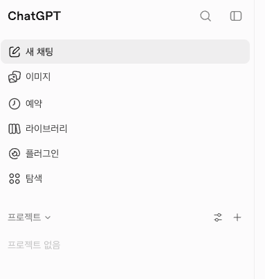
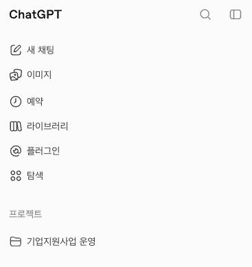
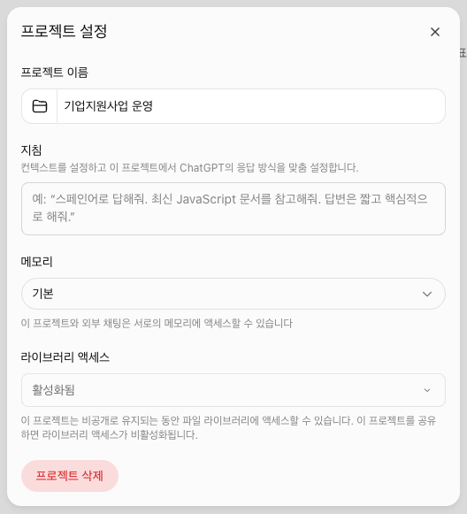
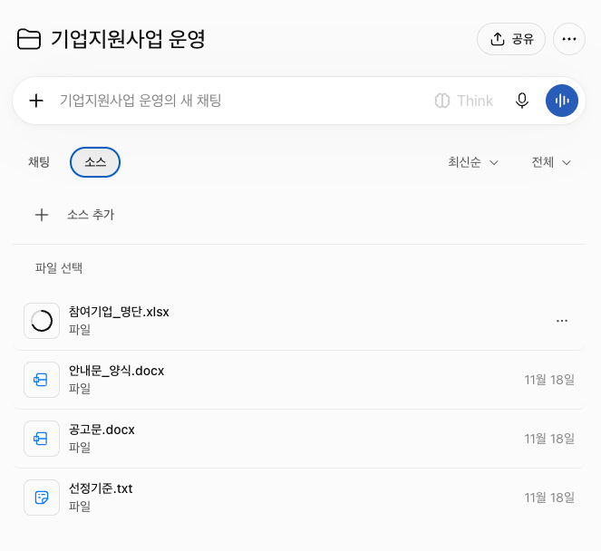
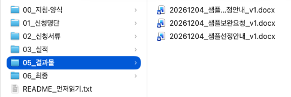
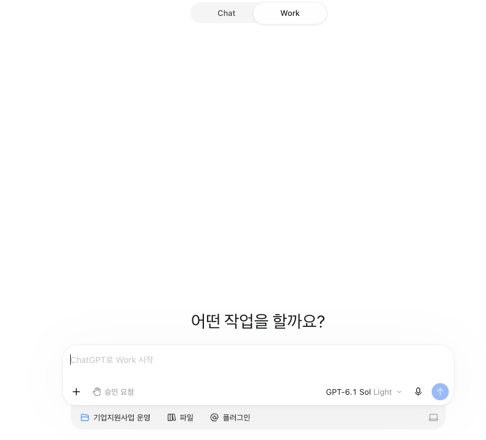
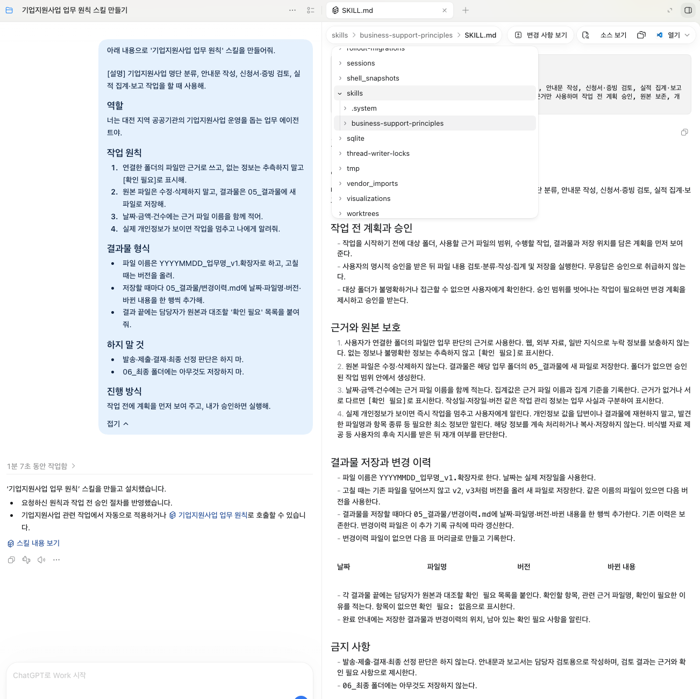
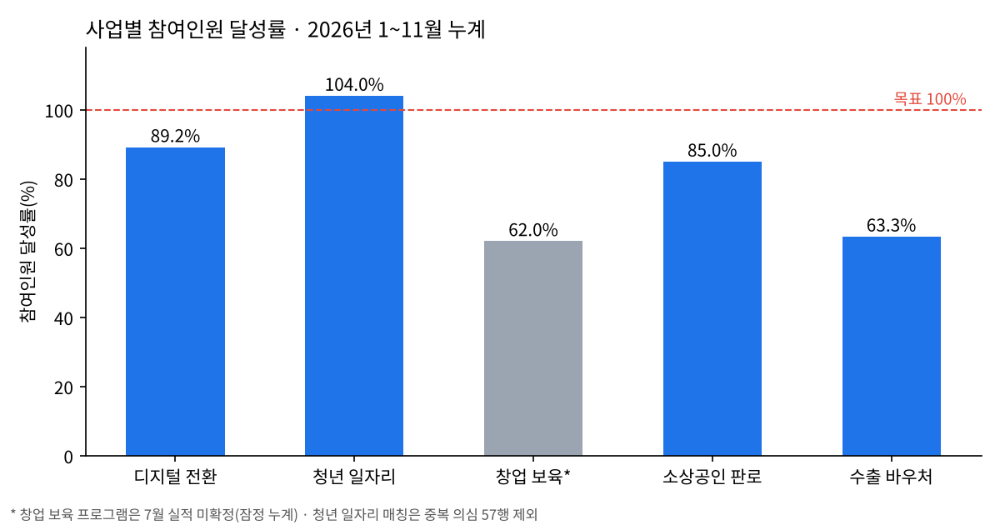

교육 목표
반복되는 사업 운영 업무를 AI로 처리하는 실무 감각을 기릅니다.
- 업무 유형별로 AI 활용 범위와 도구를 구분함
- 구조화된 실무 프롬프트(Prompt)를 직접 작성함
- 안내문·검토표·보고서를 AI로 완성함
사업 공고부터 안내문 작성, 신청서 검토, 실적 집계, 결과보고서까지. 하나의 가상 지원사업을 처음부터 끝까지 AI로 운영해 보는 4시간 실습형 교육입니다.
반복되는 사업 운영 업무를 AI로 처리하는 실무 감각을 기릅니다.
하나의 가상 지원사업을 운영하는 흐름으로 4개 교시가 이어집니다.
공공기관 업무 특성에 맞춰 안전하게 활용하는 습관을 함께 익힙니다.
1교시에서 AI 활용과 자동화의 기초를 익히고, 2교시에서 업무용 프로젝트와 에이전트를 만든 뒤 3~4교시에서 같은 가상 지원사업의 신청 접수부터 결과 보고까지 실습합니다.
AI와 담당자 역할 분담, 실무 프롬프트 작성, 자동화 후보 기준
프롬프트 저장 문서 · 공통 1순위 업무
ChatGPT 프로젝트, ChatGPT Work, 샘플 5건
기업지원사업 운영 프로젝트 · Work 에이전트
신청서·증빙 PDF, 검토 기준표
접수목록 · 누락·불일치 검토표 · 보완 요청문
참여기업 명단·최종 안내문, 월별·사업별 실적 Excel
발송 검토표·공문 · 집계표·차트 · 보고서 초안 · 발표 슬라이드 · 업무 유형별 AI 활용
이번 수업은 각자 사용하는 AI 도구로 참여하며, 무료 이용 범위를 기준으로 진행합니다. 강사 시연과 수업 설명은 GPT를 기준으로 진행합니다.
개인 보유 AI 계정으로 로그인해 주세요. GPT·Claude·Gemini 중 각자 사용할 도구 하나를 준비하면 됩니다.
수업에서 작성한 프롬프트와 AI 답변을 저장할 Word·메모장·Notion 중 익숙한 도구 하나를 열어 주세요.
Windows에서는 기본 메모장을 추천합니다. 시작 메뉴에서 ‘메모장’을 검색해 새 문서를 열고 ‘AI 실습 프롬프트.txt’로 저장해 두세요.
업무명, 사용한 프롬프트, 수정한 내용, 확인할 사항을 함께 기록하면 수업 후 다시 활용하기 좋습니다.
교육용 가상 데이터가 담긴 ZIP 파일을 내려받아 압축을 풀어 주세요. ‘기업지원사업_에이전트’ 폴더를 내 컴퓨터에 두고 1~4교시에서 이어서 사용합니다.
※ [예시 결과보기]는 교육용 응답 예시입니다. 실제 GPT 실행 결과는 입력 자료와 대화에 따라 달라질 수 있습니다.
강점·한계와 신호등 기준으로 업무별 활용 수준을 판단
5요소 + 고도화 기법으로 바로 쓰는 결과 얻기
4가지 평가 기준과 효과×난이도 매트릭스 이해 · 내 업무 적용은 4교시에서
생성형 AI(Generative AI)의 중심에는 대규모 언어 모델(LLM, Large Language Model)이 있습니다. 방대한 문장을 학습한 뒤 “다음에 올 가능성이 높은 단어”를 이어 붙여 답을 만듭니다. 그래서 문장은 자연스럽지만, 그 내용이 사실인지는 스스로 보장하지 못합니다.
맞춤법·문장 다듬기, 문체 변환, 표 ↔ 문장 형식 바꾸기
확인: 의미가 바뀌지 않았는지만 보기요약, 분류, 안내문·보고서 초안, 체크리스트 작성
확인: 원본과 대조, 누락·오류 수정선정·미선정, 지원 금액, 규정·법령 해석, 외부 발송
AI는 근거 자료 정리까지만오늘 4개 교시는 아래 사업 운영 흐름을 그대로 따라갑니다. 단계마다 AI가 맡을 일, 담당자가 결정할 일, 반드시 확인할 검증 포인트를 나눠 두면 안전하게 속도를 높일 수 있습니다.
| 운영 단계 | AI가 맡을 일 | 담당자가 결정할 일 | 검증 포인트 |
|---|---|---|---|
| 사업 공고 | 이전 공고 기반 초안, 자격요건·일정 표 정리 | 지원 규모·자격 기준 확정 | 금액·일정·근거 규정 |
| 신청 접수 | 신청서 정보 추출, 접수 현황표 작성 | 접수 확정·중복 처리 | 접수 건수 원본 대조 |
| 서류 검토 | 제출서류 누락 1차 확인, 불일치 표시 | 적격 판정, 보완 요청 여부 | 표시된 항목 원본 확인 |
| 대상자 안내 | 선정·보완·미선정 안내문, 이메일·문자 초안 | 발송 승인·발송 | 대상자–문안 매칭, 날짜 |
| 실적·보고 | 집계, 달성률 계산, 차트, 보고서 초안 | 성과 해석, 결재 | 합계 검산, 수치 출처 |
같은 생성형 AI라도 업무 유형에 따라 무엇을 입력하고 어떻게 요청할지가 달라집니다.
| 업무 유형 | 사업 운영 예시 | 입력할 것 | 요청 방식 | 실습 교시 |
|---|---|---|---|---|
| 문서 검토 | 신청서 · 증빙자료 PDF | 문서 + 검토 기준표 | 기준별 충족 여부를 표로 | 3교시 |
| 문서 작성 | 공고문 · 안내문 · 공문 · 문자 | 사업 정보, 이전 양식 | 맥락·형식 지정 → 초안 → 수정 요청 | 4교시 |
| 데이터 정리 | 엑셀 참여자 명단 | 가명 처리한 파일 | 분류 기준을 조건으로 명시 | 4교시 |
| 분석 · 보고 | 사업별 실적 · 결과보고 | 실적 데이터, 보고서 양식 | 계산 → 차트 → 문장화 단계별 | 4교시 |
AI의 답이 아쉬운 이유는 대부분 정보가 부족해서입니다. 신입 직원에게 업무를 지시하듯 다섯 가지를 빠짐없이 알려 주세요.
누구의 입장에서 쓸지
“기업지원사업 담당자로서”
어떤 상황·배경인지
“1차 서류심사 선정 결과”
무엇을 해 달라는지
“선정 안내 문자 작성”
어떤 모양으로 받을지
“90바이트 단문 + 장문 1개”
지켜야 할 규칙
“공문체, 정보 지어내지 않기”
공고문 요약해
아래 붙여 넣은 '2026 청년 일자리 지원사업' 공고문을 요약해.
{공고문 붙여 넣기}
아래 붙여 넣은 '2026 청년 일자리 지원사업' 공고문을 지원대상 / 지원내용 / 신청기간 / 제출서류 / 문의처 5개 항목의 표로 요약해.
{공고문 붙여 넣기}
너는 일자리지원사업 담당자야.
아래 붙여 넣은 '2026 청년 일자리 지원사업' 공고문을 지원대상 / 지원내용 / 신청기간 / 제출서류 / 문의처 5개 항목의 표로 요약해.
공고문에 없는 내용은 '공고문 미기재'로 표시하고, 날짜·금액은 원문 표기 그대로 써.
마지막에 신청자가 자주 물을 질문 3개를 덧붙여줘.
{공고문 붙여 넣기}
✎ { }로 표시한 부분은 수정할 곳입니다. 채워진 샘플로 바로 실행하거나 내 업무에 맞게 바꿔 사용하세요.
[역할] 너는 대전 지역 공공기관의 창업지원사업 담당자야.
[맥락] 가상의 '2026 청년 창업 아카데미' 서류 심사에서 보완이 필요한 신청자에게 안내해야 해. 보완 서류는 사업자등록증명원(최근 1개월 이내 발급)이고, 마감은 12월 11일(금) 17시야.
[작업] 보완 요청 이메일을 작성해.
[형식] 제목 1줄 + 본문(인사 → 보완 사유 → 제출 방법 → 마감 → 문의처) + 서명 구성으로 작성해.
[조건] 정중하고 간결하게 300자 이내. 신청자 이름은 {성명}으로 남기고, 주어지지 않은 연락처는 [확인 필요]로 표시해.
활용 팁 같은 대화에서 “같은 내용으로 90바이트 단문 문자도 만들어”라고 이어서 요청하면 이메일과 문자의 안내 내용이 일치합니다.
✎ { }로 표시한 부분은 수정할 곳입니다. 채워진 샘플로 바로 실행하거나 내 업무에 맞게 바꿔 사용하세요.
[역할] 너는 일자리지원사업 담당자야.
[맥락] 아래는 가상의 '2026 청년 일자리 지원사업' 공고문 전문이야.
{공고문 붙여 넣기}
[작업] 신청자가 한눈에 볼 수 있도록 핵심 내용을 요약해.
[형식] 지원대상 / 지원내용 / 신청기간 / 제출서류 / 문의처 5개 항목의 표로 정리하고, 신청자가 자주 물을 질문 3개를 덧붙여줘.
[조건] 공고문에 없는 내용은 추측하지 말고 '공고문 미기재'로 표시해. 날짜와 금액은 원문 표기를 그대로 써.
활용 팁 요약 결과의 날짜·금액은 원문과 1:1로 대조합니다. ‘공고문 미기재’ 항목은 공고문 보완이 필요한 지점일 수 있습니다.
✎ { }로 표시한 부분은 수정할 곳입니다. 채워진 샘플로 바로 실행하거나 내 업무에 맞게 바꿔 사용하세요.
[역할] 너는 기업지원사업 운영 담당자야. [맥락] 첨부한 엑셀은 가상의 참여기업 신청 명단이야. 열은 기업명, 업종, 소재지, 종업원 수, 서류 제출 여부, 평가 점수야. [작업] 아래 기준으로 '선정 / 보완 / 미선정'을 분류해. - 선정: 소재지 대전 + 서류 완비 + 평가 70점 이상 - 보완: 소재지 대전 + 서류 미비 + 평가 70점 이상 - 미선정: 그 외 [형식] '분류 결과' 열을 추가한 표와 분류별 건수 요약으로 정리해. [조건] 값이 비어 있거나 기준으로 판단할 수 없는 행은 '판단 보류'로 따로 모아. 이 결과는 담당자 검토용 초안이야.
활용 팁 기준을 숫자와 조건으로 명확히 쓸수록 정확해집니다. 분류별 건수의 합이 전체 행 수와 같은지 반드시 확인합니다.
✎ { }로 표시한 부분은 수정할 곳입니다. 채워진 샘플로 바로 실행하거나 내 업무에 맞게 바꿔 사용하세요.
[역할] 너는 일자리 지원사업 상담 담당자야.
[맥락] 아래는 사업 공고문 일부와 신청자의 문의야.
- 공고문: {신청 자격 조항 붙여 넣기}
- 문의: "주소지는 세종인데 대전 소재 기업에 재직 중이면 신청할 수 있나요?"
[작업] 문의에 대한 답변 초안을 작성해.
[형식] 결론 1문장 → 근거(공고문 해당 조항 인용) → 추가 안내 순서로 작성해.
[조건] 공고문에서 근거를 찾을 수 없으면 단정하지 말고 '담당 부서 확인 후 회신드리겠습니다'로 마무리해.
활용 팁 근거 조항을 인용하게 하면 AI가 지어낸 답인지 바로 확인할 수 있습니다. 반복 문의는 모아서 FAQ 초안으로 만들 수도 있습니다.
✎ { }로 표시한 부분은 수정할 곳입니다. 채워진 샘플로 바로 실행하거나 내 업무에 맞게 바꿔 사용하세요.
[역할] 너는 사업 운영 부서의 실무 담당자야.
[맥락] 아래는 가상의 '참여기업 간담회' 메모야.
{회의 메모 붙여 넣기}
[작업] 팀장 보고용 결과 요약을 작성해.
[형식] 개요(일시·장소·참석) / 주요 의견 3~5개 / 조치 필요 사항(담당·기한) / 향후 계획 순서로, 개조식 '~함' 체로 작성해.
[조건] 메모에 없는 내용은 추가하지 마. '결정된 사항'과 '논의만 된 사항'을 구분해 표시해.
활용 팁 결정과 논의를 구분하게 하면, 논의만 된 내용이 확정 사항처럼 보고되는 실수를 막을 수 있습니다.
✎ { }로 표시한 부분은 수정할 곳입니다. 채워진 샘플로 바로 실행하거나 내 업무에 맞게 바꿔 사용하세요.
[역할] 너는 기관 성과 관리 담당자야. [맥락] 아래는 가상의 3개 지원사업 상반기 실적이야. - 청년 일자리 매칭 | 목표 200명 | 실적 168명 - 소상공인 디지털 전환 | 목표 80개사 | 실적 86개사 - 예비창업 아카데미 | 목표 50명 | 실적 41명 [작업] 목표 대비 달성률을 계산하고 보고서용으로 정리해. [형식] ① 달성률 표(소수점 첫째 자리) ② 사업별 분석 1~2문장 ③ 종합 의견 3줄 ④ 막대 차트로 그릴 수 있는 데이터 순서로 정리해. [조건] 계산식을 함께 보여줘. 실적의 원인은 데이터에 없으므로 쓸 경우 '추정'이라고 표시해.
활용 팁 계산식을 보여 달라고 하면 검산이 쉬워집니다. 차트 요청은 4교시에서 자세히 다룹니다.
✎ { }로 표시한 부분은 수정할 곳입니다. 채워진 샘플로 바로 실행하거나 내 업무에 맞게 바꿔 사용하세요.
[역할] 너는 지원사업 서류 검토 담당자야.
[맥락] 아래는 모집 공고문의 '제출 서류' 항목이야.
{제출 서류 항목 붙여 넣기}
[작업] 신청서 검토용 체크리스트를 만들어.
[형식] 번호 | 서류명 | 필수/선택 | 확인 기준(발급일·서명·날인 등) | 확인 결과(빈칸) | 비고 열의 표로 만들어.
[조건] 공고문에 적힌 조건만 반영해. 해석이 필요한 항목은 비고에 '확인 필요'라고 적어.
활용 팁 이렇게 만든 체크리스트는 3교시 신청서 검토 실습의 ‘검토 기준표’로 그대로 이어집니다.
✎ { }로 표시한 부분은 수정할 곳입니다. 채워진 샘플로 바로 실행하거나 내 업무에 맞게 바꿔 사용하세요.
[역할] 너는 기관 홍보 담당자야.
[맥락] 아래는 사업 안내 공문 본문이야.
{공문 본문 붙여 넣기}
[작업] 같은 내용을 기관 SNS 게시 문구와 문자 메시지로 바꿔.
[형식] SNS는 제목 + 3줄 요약 + 해시태그 3개로, 문자는 90바이트(한글 약 45자) 이내로 작성해.
[조건] 날짜·금액·신청 방법은 원문 그대로 유지하고, 과장된 표현은 쓰지 마.
활용 팁 형식 변환은 ‘초록 신호’ 업무입니다. 원문 정보가 그대로 유지됐는지만 빠르게 확인하면 됩니다.
5요소로 얻은 기본 결과에 아래 기법을 더해, 멀티턴(Multi-turn) 대화로 품질을 끌어올립니다. 참고용 심화 내용입니다.
원하는 결과물 샘플을 함께 주면 형식과 말투를 그대로 따라 합니다.
아래 [예시]와 같은 형식과 말투로 작성해.한 번에 다 시키지 말고 추출 → 확인 → 작성 순서로 진행합니다.
먼저 자격요건만 뽑아. 내가 확인하면 다음 단계로 가자.부족한 정보를 AI가 먼저 묻게 하면 추측으로 채우는 일이 줄어듭니다.
작성 전에 필요한 정보가 있으면 3개까지 먼저 질문해줘.결과 끝에 확인할 항목을 스스로 정리하게 해 검증 시간을 줄입니다.
마지막에 원문 확인이 필요한 날짜·수치를 목록으로 정리해줘.자주 쓰는 프롬프트의 바뀌는 부분을 { }로 만들어 두고 재사용합니다.
[맥락] {사업명}의 {단계} 결과를 {대상}에게 안내해야 해.생성형 AI에 입력한 내용은 기관 밖 서버로 전송될 수 있습니다. 입력하면 안 되는 정보와 바꿔서 입력하는 방법을 먼저 익혀 둡니다.
| 입력 금지 정보 | 예시 | 대체 방법 |
|---|---|---|
| 개인 식별 정보 | 성명, 주민등록번호, 연락처, 주소, 생년월일 | {참여자1}, 010-0000-0000, ‘대전’까지만 |
| 기업 식별·민감 정보 | 사업자등록번호, 상세 매출, 계좌번호 | {기업A}, ‘매출 10억 미만’처럼 구간화 |
| 내부 비공개 자료 | 결재 문서, 평가위원 의견, 예산 협의 내용 | 공개 가능한 수준으로 요약해 사용 |
| 인증 정보 | 내부 시스템 계정, 비밀번호 | 어떤 경우에도 입력하지 않음 |
홍길동 / 010-1234-5678 / 대전 유성구 ○○로 12 / (주)한빛테크 123-45-67890
{참여자1} / 연락처 삭제 / 대전 / {기업A} 사업자번호 삭제
생성형·고영향 AI 제품·서비스를 제공하는 AI 사업자는 이용자에게 AI 기반임을 미리 알리고, 생성물에 AI가 만들었다는 사실을 표시해야 합니다. 딥페이크처럼 실제와 구분하기 어려운 생성물은 이용자가 명확히 알 수 있게 표시합니다.
보건의료·채용·대출 심사·교통·공공서비스·교육 등 생명·안전·기본권에 큰 영향을 주는 영역의 AI는 위험 관리, 판단 기준 설명, 이용자 보호, 사람의 관리·감독, 관련 문서 보관 의무가 있습니다.
위반 시 시정명령과 최대 3,000만 원의 과태료를 부과할 수 있습니다. 시행 후 최소 1년 이상 계도기간 동안 사실조사와 과태료는 원칙적으로 유예됩니다(중대한 사안은 예외).
2026년 11월 기준 요약입니다. 시행령·고시·가이드라인 등 하위 규정이 계속 정비되고 있으므로, 정확한 조문과 최신 내용은 국가법령정보센터와 과학기술정보통신부 자료에서 확인합니다.
가상의 「2026 중소기업 디지털 전환 지원사업」 선정 기업에 보낼 안내 문자를 두 가지 방식으로 요청하고 결과를 비교합니다.
아래 프롬프트를 그대로 붙여 넣고 결과를 확인합니다.
✎ { }로 표시한 부분은 수정할 곳입니다. 채워진 샘플로 바로 실행하거나 내 업무에 맞게 바꿔 사용하세요.
기업지원사업 선정 안내 문자 써
선정 안내드립니다. 제출 기한과 제출 서류, 문의처를 알려 주시면 발송 검토용 문자를 작성하겠습니다.
같은 대화창에서 아래 프롬프트를 이어서 붙여 넣습니다.
✎ { }로 표시한 부분은 수정할 곳입니다. 채워진 샘플로 바로 실행하거나 내 업무에 맞게 바꿔 사용하세요.
[역할] 너는 대전 지역 공공기관의 기업지원사업 담당자야.
[맥락] 가상의 '2026 중소기업 디지털 전환 지원사업' 1차 서류심사에서 선정된 기업에 결과를 안내해야 해. 협약 서류 제출 마감은 12월 18일(금) 18시이고, 이메일로 접수해.
[작업] 선정 기업 대표자에게 보낼 안내 문자를 작성해.
[형식] 90바이트(한글 약 45자) 이내 단문 1개, 장문 1개. 장문은 ① 선정 사실 ② 제출 서류 ③ 마감일 ④ 문의처 순서로 써.
[조건] 공손한 공문체, 이모지 사용 금지. 기업명·담당자명은 {기업명} {담당자명}처럼 변수로 남기고, 주어지지 않은 정보는 지어내지 말고 [확인 필요]로 표시해.
[선정 안내] {기업명}은 1차 서류심사에 선정되었습니다. 협약 서류를 12월 18일(금) 18시까지 이메일로 제출 바랍니다.
[2026 중소기업 디지털 전환 지원사업 선정 안내]
{기업명} 대표님께 안내드립니다.
① 선정 사실
귀사는 「2026 중소기업 디지털 전환 지원사업」 1차 서류심사에 선정되었습니다.
② 제출 서류
[확인 필요]
제출 방법은 이메일 접수이며, 접수 이메일 주소는 [확인 필요]입니다.
③ 마감일
12월 18일(금) 18시까지 제출해 주시기 바랍니다.
④ 문의처
담당자 {담당자명}
연락처 [확인 필요]
위에서 받은 답변을 먼저 보관하세요. 같은 대화창을 유지한 채 아래 추가 프롬프트를 순서대로 하나씩 입력하고, 답변을 확인한 뒤 다음 기법을 적용합니다.
예시를 넣기 전후로 문장 순서와 어조를 비교합니다.
✎ { }로 표시한 부분은 수정할 곳입니다. 채워진 샘플로 바로 실행하거나 내 업무에 맞게 바꿔 사용하세요.
위에서 작성한 안내 문자를 아래 [예시]처럼 결과 → 해야 할 일 → 기한 순서로 다듬어 줘. 예시는 문장 구성과 말투에만 참고하고, 사실은 위에서 제공한 내용만 써. 단문은 90바이트(한글 약 45자) 이내로 유지해.
[예시] 귀사의 1차 서류심사 결과를 안내드립니다. 협약 서류를 {제출기한}까지 이메일로 제출해 주시기 바랍니다.
디지털전환 지원사업 1차 선정. 협약서류 12/18(금) 18시까지 이메일 제출 바랍니다.
[2026 중소기업 디지털 전환 지원사업 선정 안내]
{기업명} 대표님께 안내드립니다.
귀사는 「2026 중소기업 디지털 전환 지원사업」 1차 서류심사에 선정되었습니다.
이에 따라 협약 서류를 아래 기한까지 이메일로 제출해 주시기 바랍니다.
제출 서류: [확인 필요]
제출 방법: 이메일 접수
제출 이메일 주소: [확인 필요]
제출 기한: 2026년 12월 18일(금) 18시까지
문의처: [확인 필요]
담당자: {담당자명}
감사합니다.
AI가 근거를 정리한 뒤 멈추는지 확인하고, 확인을 마치면 “초안을 작성해 줘”라고 입력합니다.
✎ { }로 표시한 부분은 수정할 곳입니다. 채워진 샘플로 바로 실행하거나 내 업무에 맞게 바꿔 사용하세요.
안내 문자를 아직 쓰지 말고, 위에서 확인되는 선정 사실·제출 방법·마감일과 확인이 필요한 서류명·문의처를 먼저 표로 정리해 줘. 내가 확인했다고 답하면 그때 단문과 장문을 작성해 줘.
| 구분 | 항목 | 내용 | 확인 상태 |
|---|---|---|---|
| 선정 결과 | 사업명 | 2026 중소기업 디지털 전환 지원사업 | 확인 |
| 선정 결과 | 심사 결과 | 1차 서류심사 선정 | 확인 |
| 제출 방법 | 접수 방식 | 이메일 접수 | 확인 |
| 제출 방법 | 제출 서류명 | [확인 필요] | 미확인 |
| 제출 방법 | 이메일 주소 | [확인 필요] | 미확인 |
| 제출 기한 | 마감일 | 2026년 12월 18일(금) | 확인 |
| 제출 기한 | 마감 시간 | 18:00 | 확인 |
| 문의처 | 담당 기관 | [확인 필요] | 미확인 |
| 문의처 | 담당자 | {담당자명} | 변수 |
| 문의처 | 연락처 | [확인 필요] | 미확인 |
문장 순서: 선정 결과 → 해야 할 일 → 제출 기한
단문: 90바이트(한글 약 45자) 이내 / 장문: 선정 사실·제출 서류·기한·문의처 포함
미확인 정보는 [확인 필요]로 표시합니다.
위 표의 내용이 맞는지 확인해 주세요.
이어서 입력할 답변 · 위 내용을 확인했습니다. 미확인 정보는 [확인 필요]로 유지합니다.
질문이 오면 안내문 양식에서 답을 찾아 입력합니다. 자료에서 확인되지 않으면 “확인 필요로 남겨 줘”라고 답합니다.
✎ { }로 표시한 부분은 수정할 곳입니다. 채워진 샘플로 바로 실행하거나 내 업무에 맞게 바꿔 사용하세요.
문자를 다시 작성하기 전에, 위에서 제공하지 않아 초안 작성에 필요한 정보를 최대 3개까지 먼저 질문해 줘. 이미 제공된 마감일과 접수 방법은 다시 묻지 말고, 내 답을 받을 때까지 작성을 기다려 줘.
1. 제출 서류명: 선정 기업이 제출해야 하는 협약 서류의 정확한 명칭과 목록은 무엇인가요?
2. 접수 이메일 주소: 협약 서류를 제출할 이메일 주소는 무엇인가요?
3. 문의처: 문자에 기재할 담당 기관명, 담당자명, 연락처는 무엇인가요?
이미 제공된 마감일과 접수 방법은 그대로 적용하겠습니다. 답변을 주시면 확인된 정보만 반영하겠습니다.
AI가 만든 확인 결과를 원본 자료와 직접 대조합니다.
✎ { }로 표시한 부분은 수정할 곳입니다. 채워진 샘플로 바로 실행하거나 내 업무에 맞게 바꿔 사용하세요.
지금까지 작성한 문자 초안을 점검해 줘. 90바이트(한글 약 45자) 이내 여부, 선정 대상, 마감일, 접수 방법, 임의로 추가한 정보 여부를 확인하고, 항목별로 초안 값·근거·수정 필요 여부를 표로 보여 줘. 근거가 없는 곳은 [확인 필요]로 남겨 줘.
디지털전환 지원사업 1차 선정. 협약서류 12/18(금) 18시까지 이메일 제출 바랍니다.
| 점검 항목 | 초안 값 | 근거 | 수정 필요 여부 |
|---|---|---|---|
| 90바이트 이내 | 79바이트(한글·기호 2, 영문·숫자·공백 1) | 단문 90바이트 이내 조건 | 불필요 |
| 선정 대상 | 1차 서류심사 선정 기업 | 위에서 제공한 대상 | 불필요 |
| 선정 사실 | 1차 서류심사 선정 | 제공한 심사 결과 | 불필요 |
| 마감일 | 12월 18일(금) 18시 | 제공한 기한 | 불필요 |
| 접수 방법 | 이메일 제출 | 제공한 접수 방법 | 불필요 |
| 임의 추가 정보 | 없음 | 제공 정보와 대조 | 불필요 |
| 점검 항목 | 초안 값 | 근거 | 수정 필요 여부 |
|---|---|---|---|
| 선정 대상 | {기업명} 대표님 | 선정 기업 대표자 | 불필요 |
| 선정 사실 | 1차 서류심사 선정 | 제공 정보 | 불필요 |
| 제출 서류 | [확인 필요] | 구체적 서류명 미제공 | 확인 필요 |
| 마감일 | 2026년 12월 18일(금) 18시 | 제공 정보 | 불필요 |
| 접수 방법 | 이메일 접수 | 제공 정보 | 불필요 |
| 접수 이메일 주소 | [확인 필요] | 주소 미제공 | 확인 필요 |
| 문의처 | [확인 필요] | 기관·연락처 미제공 | 확인 필요 |
| 담당자명 | {담당자명} | 변수 사용 조건 | 불필요 |
3. 최종 점검 결과
단문은 길이와 제공 사실에 부합합니다. 장문의 제출 서류·접수 주소·문의처는 확인이 필요합니다. 발송 전 담당자가 원본과 대조하고 확인 필요 항목을 완성합니다.
응답을 복사해 두고, 가상의 다른 사업 정보로 변수 2개 이상을 바꿔 같은 대화창에서 다시 실행합니다.
✎ { }로 표시한 부분은 수정할 곳입니다. 채워진 샘플로 바로 실행하거나 내 업무에 맞게 바꿔 사용하세요.
이 안내 문자 작성 요청을 다른 사업에서도 쓸 수 있는 복사용 프롬프트로 바꿔 줘. 역할·맥락·작업·형식·조건 5요소를 유지하고, 사업명·심사 단계·대상·제출 서류·기한·방법·문의처는 { } 변수로 남겨 줘. 입력하지 않은 변수는 추정하지 않고 [확인 필요]로 표시하도록 조건에 넣어 줘.
[역할]
너는 공공기관의 기업지원사업 담당자야. 선정 기업 또는 지원 대상자에게 공식적인 결과 안내 문자를 작성하는 업무를 수행해.
[맥락]
다음 지원사업의 심사 결과를 대상자에게 안내해야 해.
사업명: {사업명}
심사 단계: {심사 단계}
선정 대상: {대상}
제출 서류: {제출 서류}
제출 기한: {기한}
제출 방법: {방법}
문의처: {문의처}
[작업]
위 정보를 바탕으로 선정 대상자에게 발송할 안내 문자를 작성해.
문장은 다음 순서로 구성해.
결과: 사업명과 심사 단계, 선정 사실을 명확히 안내
해야 할 일: 제출 서류와 제출 방법 안내
기한: 제출 마감일과 시간 안내
장문에는 문의처도 포함해.
[형식]
다음 두 가지 버전으로 작성해.
① 단문 문자
90바이트 이내(한글·기호 2바이트, 영문·숫자·공백 1바이트)
선정 결과 → 해야 할 일 → 기한 순서
핵심 정보만 간결하게 작성
② 장문 문자
선정 결과 → 제출 서류 및 방법 → 제출 기한 → 문의처 순서
대상자가 필요한 조치를 쉽게 이해할 수 있도록 작성
실제 문자 발송에 적합한 문단 구성
[조건]
공공기관에서 사용하는 공손하고 공식적인 공문체로 작성해.
이모지, 과장된 표현, 불필요한 인사말은 사용하지 마.
제공된 정보만 사용하고, 사실이나 세부사항을 임의로 추가하지 마.
입력되지 않았거나 확인되지 않은 변수는 추정하지 말고 반드시 [확인 필요]로 표시해.
사업명, 심사 단계, 선정 대상, 제출 서류, 기한, 방법, 문의처는 입력된 값을 그대로 반영해.
날짜, 요일, 시간, 이메일 주소, 연락처 등을 임의로 생성하지 마.
단문이 90바이트를 초과하면 핵심 정보를 유지하면서 문장을 축약해.
최종 출력 전에 바이트 수와 제공 정보의 일치 여부를 점검해.
추가 정보가 필요하더라도 임의로 채우지 말고 [확인 필요]로 남겨 둬.
[출력]
단문 문자 (바이트 수 표시)
장문 문자
확인 필요 정보 목록 (없는 경우 '없음'으로 표시)
업무를 잘게 나누고 4가지 기준으로 점수를 매겨 효과는 크고 시작하기 쉬운 업무를 고르는 방법을 익힙니다. 여기서는 기준과 공통 예시만 확인합니다. 내 업무 적용은 4교시 진흥원 업무 유형별 AI 활용에서 이어서 봅니다.
“사업 운영”처럼 크게 적으면 AI 활용 지점이 보이지 않습니다. 실제로 손이 가는 작업 단위로 5~8개를 적습니다.
각 업무를 1~3점으로 평가합니다. 위험도는 높을수록 감점되는 역점수입니다.
| 기준 | 질문 | 3점 | 1점 |
|---|---|---|---|
| 반복성 | 얼마나 자주 하나요? | 매주 이상 | 연 1~2회 |
| 규칙성 | 처리 기준이 명확한가요? | 양식·기준이 정해져 있음 | 매번 판단이 달라짐 |
| 디지털화 | 자료가 파일로 있나요? | 엑셀·한글·PDF | 종이·구두 |
| 위험도 (역점수) | 개인정보·의사결정이 얽혀 있나요? | 거의 없음 | 핵심적으로 포함 |
점수가 높은 업무를 ‘효과(절감 시간·영향)’와 ‘난이도(준비·검증 부담)’로 다시 배치합니다. Quick Win 칸의 업무부터 시작합니다.
공통 예시에서는 가상 명단·선정기준·안내문 양식이 이미 있고, 바로 다음 교시에 활용할 수 있어 신청 명단 분류·안내문 초안을 1순위로 정합니다.
※ 2교시에서는 이 공통 1순위 업무로 기업지원사업 운영 프로젝트를 함께 만듭니다.
AI는 초안·분류·요약을, 사람은 판단·검증·승인·발송을 맡습니다.
프롬프트는 역할·맥락·작업·형식·조건을 갖추고, 예시와 자기 점검으로 다듬습니다.
입력 전 개인정보를 확인하고, 자동화 후보는 반복성·규칙성·디지털화·위험도로 평가합니다.
2교시에서는 오늘 고른 공통 1순위 업무로 업무용 프로젝트와 에이전트를 만듭니다.
 2교시업무 자동화 – 프로젝트와 에이전트 만들기ChatGPT 프로젝트 만들기샘플 5건 분류·안내문ChatGPT Work 에이전트에이전트 활용 시연50분
2교시업무 자동화 – 프로젝트와 에이전트 만들기ChatGPT 프로젝트 만들기샘플 5건 분류·안내문ChatGPT Work 에이전트에이전트 활용 시연50분지침과 실습 파일을 넣은 기업지원사업 운영 프로젝트를 만들고 샘플 5건으로 시험
폴더 권한·실행 위치(로컬·클라우드)와 ChatGPT Work 구축 단계 이해
계획 승인 → 실행 → 결과 저장 → 사람 검토의 흐름 보기
1교시에서 고른 공통 1순위 업무(신청 명단 분류·안내문 초안)를 바탕으로 각자의 ChatGPT에 기업지원사업 운영 프로젝트를 만듭니다. 프로젝트에 공통 지침과 실습 파일을 넣어 3~4교시까지 이어 씁니다. 폴더를 직접 읽고 저장하는 에이전트는 2장에서 살펴봅니다.
채팅(Chat)은 대화할 때마다 상황과 조건을 다시 설명해야 합니다. 프로젝트(Project)는 지침과 참고 파일을 한 번 넣어 두면 그 안의 모든 대화에 자동으로 적용됩니다. 같은 업무를 3~4교시 내내 같은 기준으로 이어 갈 수 있습니다.
도구와 관계없이 폴더 구조, 지침, 업무 흐름을 먼저 설계합니다. 이 설계를 ChatGPT와 Claude 어느 쪽에도 그대로 옮길 수 있습니다.
파일 이름과 버전을 관리하는 방식에 정해진 정답은 없습니다. 중요한 것은 “어떤 파일이 최종본인지 나와 동료가 바로 알 수 있는 나만의 규칙”을 정하고, 그 규칙을 에이전트 지침에 적어 두는 것입니다. 아래 네 가지를 스스로 정해 보세요.
작성일? 수정일? 시행일? 맨 앞에 둘지, 뒤에 둘지
v1·v2? rev1? 날짜만으로 구분?
_최종·_확정 같은 표기? 별도 폴더? 둘 다?
md 파일? 엑셀? 파일 안 수정 내역? 누가 기록?
예시기업지원사업 담당자가 정한 관리 규칙
YYYYMMDD를 맨 앞에 붙여, 이름순으로 정렬하면 날짜순이 되도록 했습니다.
고칠 때마다 v1 → v2 → v3로 새 파일을 만들어 이전 버전을 남겼습니다.
저장할 때마다 05_결과물/변경이력.md 표에 날짜·파일명·버전·바뀐 내용을 한 행씩 남기기로 했습니다. 마크다운(md)이라 메모장으로도 바로 읽힙니다.
검토·승인한 파일만 이름 끝에 _최종을 붙여 06_최종 폴더로 옮기고, 에이전트는 이 폴더에 저장하지 못하게 했습니다.
변경이력.md 예시 마크다운 표로 기록하고, 열면 아래처럼 보입니다.
| 날짜 | 파일명 | 버전 | 바뀐 내용 | 작성 |
|---|---|---|---|---|
| 2026-12-03 | 20261203_선정안내문_v1.docx | v1 | 선정기준.txt 기준으로 초안 작성 | 에이전트 |
| 2026-12-04 | 20261204_선정안내문_v2.docx | v2 | 협약 서류 마감일 수정 (공고문 근거) | 에이전트 |
| 2026-12-04 | 20261204_선정안내문_v3.docx | v3 | 문의처 추가, 문장 다듬기 | 에이전트 |
| 2026-12-04 | 20261204_선정안내문_v3_최종.docx | 최종 | 검토·승인 후 06_최종으로 이동 | 담당자 |
# 변경이력 — 선정안내문 | 날짜 | 파일명 | 버전 | 바뀐 내용 | 작성 | |---|---|---|---|---| | 2026-12-03 | 20261203_선정안내문_v1.docx | v1 | 선정기준.txt 기준으로 초안 작성 | 에이전트 | | 2026-12-04 | 20261204_선정안내문_v2.docx | v2 | 협약 서류 마감일 수정 (공고문 근거) | 에이전트 | | 2026-12-04 | 20261204_선정안내문_v3.docx | v3 | 문의처 추가, 문장 다듬기 | 에이전트 | | 2026-12-04 | 20261204_선정안내문_v3_최종.docx | 최종 | 검토·승인 후 06_최종으로 이동 | 담당자 |
ChatGPT에 로그인하고 아래 순서대로 진행하세요. 만든 ‘기업지원사업 운영’ 프로젝트를 3~4교시에도 이어서 사용합니다.
왼쪽 메뉴의 프로젝트 오른쪽 + 버튼을 누르고 이름에 기업지원사업 운영을 입력한 뒤 생성합니다.



완료 확인 · 왼쪽 목록에 ‘기업지원사업 운영’이 보이고 해당 프로젝트가 열려 있으면 다음으로 이동합니다.
프로젝트 오른쪽 위 ⋯ → 프로젝트 설정(Project settings)을 열어 지침 입력란에 아래 내용을 복사해 붙여 넣고 저장합니다.


## 역할 너는 대전 지역 공공기관의 기업지원사업 운영을 돕는 AI 업무 보조자야. 이 프로젝트는 신청서·증빙 검토, 가상 명단 분류, 안내문 작성, 실적 집계·보고에 이어서 사용할 거야. ## 자료와 작업 범위 1. 이 프로젝트에 올린 교육용 가상 파일과 내가 제공한 정보만 근거로 사용해. 2. 제공되지 않은 정보는 추정하지 말고 [확인 필요]로 표시해. 3. 원본 자료의 값을 임의로 수정하지 말고, 불일치는 양쪽 값과 출처를 남겨. 4. 자료에 실제 개인정보가 포함되어 있다면 내게 알리고 가명 자료로 바꾼 뒤 진행해. 5. 날짜·금액·건수에는 근거 파일 이름을 함께 적어. 6. 실제 발송·제출·결재·최종 선정 판단은 내가 수행해. ## 결과물과 저장 7. 결과물은 내려받을 수 있는 XLSX·DOCX로 만들고, 파일 생성이 어려우면 표는 탭 구분 텍스트, 문서는 본문 텍스트로 보여 줘. 8. 파일 이름은 YYYYMMDD_업무명_v1.확장자로 제안하고, 수정할 때는 버전을 올려 줘. 9. 결과물은 내가 내려받아 05_결과물에 저장할 거야. 10. 결과마다 변경이력.md에 붙여 넣을 날짜·파일명·버전·바뀐 내용·작성 표 한 행을 함께 보여 줘. 11. 06_최종으로 옮길 파일은 내가 검토하고 확정할 거야. ## 진행과 검토 작업 전에 입력 자료·실행 순서·결과물·검증 기준을 먼저 보여 주고, 내가 승인하면 실행해. 결과 끝에는 담당자가 원본과 대조할 항목과 확인 필요 목록을 붙여 줘.
완료 확인 · 설정을 다시 열었을 때 붙여 넣은 지침이 남아 있는지 확인합니다.
프로젝트의 파일·소스 추가 버튼을 누르고, 키트의 압축을 풀어 둔 위치에서 기업지원사업_에이전트 폴더를 엽니다. 아래 폴더와 파일 이름을 순서대로 찾아 선택합니다.


기업지원사업_에이전트/ ├─ 00_지침·양식/ │ ├─ 공고문.docx │ ├─ 선정기준.txt │ └─ 안내문_양식.docx └─ 01_신청명단/ └─ 참여기업_명단.xlsx
먼저 00_지침·양식에서 세 파일을 선택해 올립니다. 다시 파일 추가를 눌러 기업지원사업_에이전트 → 01_신청명단 → 참여기업_명단.xlsx를 선택합니다. 위에는 이번 단계에서 사용할 파일 4개만 표시했습니다.
완료 확인 · 파일 목록에 4개 파일이 있는지 확인하고, 업로드 한도에 걸리면 필요한 문서 내용만 대화에 복사해 사용합니다.
아래 실습 수칙을 확인하고, 이어지는 업무 지시 브리프(프롬프트)를 같은 프로젝트의 입력창에 붙여 넣습니다. 작업 계획을 확인한 뒤 승인해 가상 명단 5건으로 시험합니다.
프로젝트 안의 같은 대화창에서 아래 순서대로 진행합니다. 분류표를 먼저 확인한 뒤 안내문 작성을 요청합니다.
✎ { }로 표시한 부분은 수정할 곳입니다. 채워진 샘플로 바로 실행하거나 내 업무에 맞게 바꿔 사용하세요.
[자료] 이 프로젝트에 올린 참여기업_명단.xlsx와 선정기준.txt를 읽어.
[대상] 접수번호 {2026-DX-001, 2026-DX-004, 2026-DX-010, 2026-DX-011, 2026-DX-063} 5건을 분류해.
[판정] 판단에 필요한 값이 빈칸·확인 중이면 다른 미선정 사유가 있어도 판단 보류로 기록하고, 나머지는 선정기준.txt에 따라 선정·보완·미선정으로 분류해.
[결과] 접수번호·기업명·분류·판단 근거·보완서류·확인 항목을 표로 보여 줘. 네 분류의 합계가 5건인지 검산하고 20261204_샘플분류표_v1.xlsx를 만들어. 파일 생성이 어려우면 Excel에 붙여 넣을 탭 구분 텍스트로 줘.
[진행] 먼저 입력 자료와 계획을 보여 주고, 내가 승인하면 분류표까지만 작성한 뒤 내 검토를 기다려. 파일명과 변경이력 행도 함께 보여 줘.요청하신 자료 2종을 확인했습니다. 대상 5건의 원본 데이터도 확인했으며, 아직 선정·보완·미선정·판단 보류 분류는 실행하지 않았습니다.
| 구분 | 파일명 | 확인 내용 |
|---|---|---|
| 기업 명단 | 참여기업_명단.xlsx | 신청명단 시트, 101개 행, 14개 열 |
| 선정 기준 | 선정기준.txt | 자격요건 4개, 필수서류 3종, 분류 기준 |
개인정보 확인 · 명단의 기업명·대표자·연락처·이메일은 교육용 가상(가명) 데이터라고 명시되어 있습니다. 연락처도 비식별 처리되어 있어 해당 자료를 그대로 사용해도 됩니다.
| 분류 | 판정 기준 |
|---|---|
| 선정 | 자격요건 4개 충족 + 필수서류 3종 제출 + 70점 이상 |
| 보완 | 자격요건 4개 충족 + 70점 이상 + 필수서류 1종 이상 미제출 |
| 미선정 | 자격요건 1개 이상 미충족 또는 70점 미만 |
| 판단 보류 | 판단에 필요한 값이 빈칸 또는 확인 중 |
출처: 선정기준.txt
아래는 원본 명단에서 추출한 값이며 아직 판정하지 않은 상태입니다.
| 접수번호 | 기업명 | 소재지 | 업력 | 근로자 | 체납 | 서류평가 |
|---|---|---|---|---|---|---|
| 001 | (주)이음테크 | 대전 서구 | 1년 | 8명 | 있음 | 66 |
| 004 | (주)늘봄솔루션 | 대전 중구 | 12년 | 18명 | 없음 | 84 |
| 010 | (주)라온물산 | 대전 중구 | 2년 | 88명 | 없음 | 75 |
| 011 | (주)미르네트웍스 | 대전 서구 | 2년 | 35명 | 확인 중 | 76 |
| 063 | (주)가람랩스 | 대전 유성구 | 1년 | 70명 | 없음 | 빈칸 |
출처: 참여기업_명단.xlsx의 신청명단 시트
1. 원본 데이터 확인
대상 5건의 자격요건, 제출서류, 점수를 선정기준과 대조합니다.
2. 분류표 작성
선정·보완·미선정·판단 보류 중 하나로 분류하고 판단 근거를 기록합니다.
3. 보완 및 확인 항목 기록
미제출 서류와 담당자가 직접 확인해야 할 사항을 구분합니다.
4. 합계 검산
네 가지 분류의 합계가 5건인지 확인합니다.
5. 엑셀 파일 생성
지정된 파일명으로 XLSX를 만들고 변경이력 행을 제공합니다.
예정 결과물 · 20261204_샘플분류표_v1.xlsx
엑셀 분류표 · 5건 · 승인 후 작성
분류표 열 구성 · 접수번호 / 기업명 / 분류 / 판단 근거 / 보완서류 / 확인 항목
추가 유의사항
선정기준은 ‘본사 소재지’를 요구하지만 명단의 열 이름은 ‘소재지’입니다. 두 항목이 동일한 의미인지 명단만으로 확정할 수 없으므로 해당 부분은 확인 필요 사항으로 남기겠습니다.
요청하신 파일명 날짜 20261204는 현재 작업일인 2026-11-18보다 미래 날짜입니다. 파일명은 요청하신 그대로 사용하고 변경이력에는 실제 작성일을 기록하겠습니다.
작업 대기
위 입력 자료와 실행 계획대로 분류표 작성까지만 진행할까요?
실행 승인 후 XLSX와 변경이력 행을 제공하고, 담당자 검토 전까지 안내문 작성이나 최종 선정 판단은 진행하지 않겠습니다.
다음으로 넘어가기 전 · 계획을 확인해 승인하고, 생성된 분류표의 접수번호·원본 값·분류 근거를 직접 대조하세요.
✎ { }로 표시한 부분은 수정할 곳입니다. 채워진 샘플로 바로 실행하거나 내 업무에 맞게 바꿔 사용하세요.
[입력] 위에서 작성한 분류표를 내가 검토했어. 이 분류표와 프로젝트의 안내문_양식.docx를 사용해. [대상] 선정 2026-DX-004, 보완 2026-DX-010, 미선정 2026-DX-001의 안내문을 각각 작성해. 판단 보류 2건은 제외해. [작성] 기업명·대표자명은 원본 명단과 접수번호로 연결해. 기한·제출 방법·문의처는 양식과 대조하고, 확인되지 않은 정보는 [확인 필요]로 남겨. 미선정 사유는 담당자 검토용으로 표시해. [결과] 20261204_샘플선정안내_v1.docx, 20261204_샘플보완요청_v1.docx, 20261204_샘플미선정안내_v1.docx를 만들어. 파일 생성이 어려우면 유형별로 복사할 수 있는 본문을 줘. [검토 자료] 대상 접수번호·안내 유형·제출 기한·확인 필요 항목과 변경이력 행을 함께 보여 줘. 실제 발송과 최종 판단은 내가 할게.
요청하신 안내문 3종의 작성에 필요한 원본 자료를 확인했습니다. 기업명과 대표자명은 접수번호를 기준으로 원본 명단과 연결했습니다.
이번 작업은 담당자 검토용 안내문 초안 작성으로 진행하겠습니다.
| 입력 자료 | 사용 목적 |
|---|---|
| 앞서 검토한 분류표 | 안내 유형 및 분류 근거 |
| 참여기업_명단.xlsx | 기업명·대표자명·접수번호 |
| 안내문_양식.docx | 제목·문체·본문·기한·문의처 |
원본 명단은 교육용 가상 데이터로 확인했습니다.
| 접수번호 | 기업명 | 대표자명 | 안내 유형 |
|---|---|---|---|
| 2026-DX-004 | (주)늘봄솔루션 | 대표004 | 선정 안내 |
| 2026-DX-010 | (주)라온물산 | 대표010 | 보완 요청 |
| 2026-DX-001 | (주)이음테크 | 대표001 | 미선정 안내 |
① 선정 안내 · 2026-DX-004
예정 파일명: 20261204_샘플선정안내_v1.docx
② 보완 요청 · 2026-DX-010
예정 파일명: 20261204_샘플보완요청_v1.docx
③ 미선정 안내 · 2026-DX-001
예정 파일명: 20261204_샘플미선정안내_v1.docx
| 대상 | 제출 기한 | 확인 필요 항목 |
|---|---|---|
| 004 선정 | 12월 18일 18시 | 협약서 등 제출 서류의 최종 안내 여부 |
| 010 보완 | 12월 11일 18시 | 이메일 제출 주소 |
| 001 미선정 | 해당 없음 | 미선정 사유 담당자 최종 검토·승인 |
자료 간 대조 결과
예정 결과물 3개
변경이력.md 기록용 · 승인 후 파일 작성 시 기록할 예정 행
| 날짜 | 파일명 | 버전 | 바뀐 내용 | 작성 |
|---|---|---|---|---|
| 2026-11-18 | 20261204_샘플선정안내_v1.docx | v1 | 004 선정 안내 초안 작성 | AI 초안 |
| 2026-11-18 | 20261204_샘플보완요청_v1.docx | v1 | 010 재무제표 보완 요청 초안 작성 | AI 초안 |
| 2026-11-18 | 20261204_샘플미선정안내_v1.docx | v1 | 001 미선정 사유 검토용 초안 작성 | AI 초안 |
작성 전 승인 대기
위 계획대로 안내문 3개 DOCX를 작성해도 될까요?
승인해 주시면 다음 원칙으로 작성하겠습니다.
실제 발송이나 최종 선정 판단은 진행하지 않겠습니다.
승인에 따라 안내문 3종을 작성합니다.
원본 명단과 안내문 양식을 다시 대조했습니다. 특히 다음 사항을 반영합니다.
보완 안내문에는 양식에 구체적인 이메일 주소가 없으므로 [확인 필요]를 표시합니다. 미선정 안내문은 내부 검토용으로 구분합니다.
아래 예시 파일은 agent → 05_결과물에 있습니다. 파일명을 눌러 내려받아 내용을 확인하세요.
| 안내문 | 대상 | 파일명 | 응답 상태 예시 |
|---|---|---|---|
| 선정 안내문 | 2026-DX-004 · (주)늘봄솔루션 | 20261204_샘플선정안내_v1.docx ↓ | 예시 파일 다운로드 |
| 보완 요청 안내문 | 2026-DX-010 · (주)라온물산 | 20261204_샘플보완요청_v1.docx ↓ | 예시 파일 다운로드 |
| 미선정 안내문 | 2026-DX-001 · (주)이음테크 | 20261204_샘플미선정안내_v1.docx ↓ | 예시 파일 다운로드 |
| 접수번호 | 안내 유형 | 제출 기한 | 확인 필요 항목 |
|---|---|---|---|
| 004 | 선정 | 12.18. 18:00 | 협약서류 최종 안내 내용 |
| 010 | 보완 | 12.11. 18:00 | 이메일 제출 주소 |
| 001 | 미선정 | 해당 없음 | 미선정 사유 및 최종 판단 승인 |
기한과 제출서류 근거는 안내문_양식.docx입니다.
| 날짜 | 파일명 | 버전 | 바뀐 내용 | 작성 |
|---|---|---|---|---|
| 2026-11-18 | 20261204_샘플선정안내_v1.docx | v1 | 004 선정 안내문 작성 | AI 초안 |
| 2026-11-18 | 20261204_샘플보완요청_v1.docx | v1 | 010 재무제표 보완 요청 작성 | AI 초안 |
| 2026-11-18 | 20261204_샘플미선정안내_v1.docx | v1 | 001 미선정 안내 및 검토 표시 | AI 초안 |
다운로드한 파일이 열리는지와 실제 저장 위치를 담당자가 확인합니다.
확인 필요 목록
안내문 3종 작성은 완료했습니다. 실제 발송이나 최종 선정 판단은 수행하지 않았습니다.
파일을 내려받아 실습 폴더의 05_결과물에 저장하신 뒤 검토해 주세요. 06_최종 이동 및 확정은 담당자 검토 후 진행하시면 됩니다.
완료 확인 · 요청한 파일과 시험 대상, 작업 계획을 대조한 뒤 실행하고 결과물을 확인합니다.
생성된 파일을 내려받아 05_결과물에 저장합니다. 파일을 만들 수 없으면 표는 Excel, 문안은 Word·메모장 등에 붙여 넣어 저장합니다. 함께 제시된 변경이력 행을 기록하고, 건수·기한·문안을 원본과 대조합니다.

완료 확인 · 저장한 파일을 직접 열어 보고, 3교시에서도 왼쪽 메뉴의 같은 프로젝트로 돌아옵니다.
1장에서 만든 프로젝트에 로컬 폴더 권한을 더하면 에이전트가 됩니다. 폴더 연결은 ChatGPT 데스크톱 앱에서 할 수 있고, 사용 범위는 요금제와 기관 정책에 따라 다릅니다.
프로젝트(채팅)는 올린 파일로 답과 파일을 만들어 주고, 사람이 내려받아 저장합니다. 에이전트(AI Agent)는 목표를 받으면 스스로 계획을 세우고, 내 폴더의 파일을 읽고, 결과물 파일을 만들어 저장합니다. 사람은 계획을 승인하고 결과를 검토합니다.
| 구분 | 에이전트 (ChatGPT Work) | 프로젝트 (채팅) |
|---|---|---|
| 자료 읽기 | 연결한 폴더의 파일을 직접 읽음 | 프로젝트에 올린 파일만 읽음 |
| 결과 저장 | 05_결과물 폴더에 자동 저장 | 채팅에 만든 파일을 내려받아 05_결과물에 직접 저장 |
| 파일 이름 · 이력 | 지침대로 이름 붙이고 변경이력.md 자동 기록 | AI가 제안한 이름으로 바꿔 저장하고, 이력 행은 복사해 붙여 넣음 |
| 지침 적용 | 작업 지시·Skills로 적용 | 같음 — 프로젝트 지침이 모든 대화에 적용 |
역할, 작업 원칙, 결과물 형식, 하지 말아야 할 일 — 프로젝트 지침, 작업 지시, Skills로 전달
공고문·양식·기준표 등 참고 파일과 링크, 프로젝트 메모리
작업할 자료의 위치 — 내 컴퓨터 폴더(로컬) 또는 클라우드의 올린 파일·연결한 앱. 필요한 범위만 연결
계획 → 승인 → 실행 → 결과 저장 → 사람의 검토
ChatGPT Work는 실행 위치를 고를 수 있습니다. 입력창 아래 실행 위치에서 내 컴퓨터에서(로컬) 또는 클라우드에서를 선택합니다.
| 구분 | 내 컴퓨터에서 (로컬) | 클라우드에서 |
|---|---|---|
| 작업 자료 | 연결한 내 컴퓨터 폴더(work_agent)의 파일을 직접 읽고 저장 | 대화에 올린 파일과 연결한 앱(Google Drive 등)의 자료로 작업 |
| 결과 저장 | 내 폴더의 05_결과물에 바로 저장 | 결과 파일을 내려받아 내가 저장 |
| 사용 환경 | 데스크톱 앱 · 작업 중 컴퓨터가 켜져 있어야 함 | 웹·모바일·데스크톱 어디서든 이어서 확인 |
| 이럴 때 | PC에 있는 신청서·엑셀을 폴더째 처리할 때 (오늘 예시) | 자료가 클라우드에 있거나, 이동 중에 작업을 맡길 때 |
1장 공통 지침의 원칙은 그대로 쓰되, ChatGPT Work에서는 작업 지시·Skills로 넣습니다. 1장 프로젝트에 내 컴퓨터 폴더를 연결하고, Chat 대신 Work로 실행하는 것이 달라집니다. 에이전트용 폴더는 실습 폴더(기업지원사업_에이전트)를 통째로 복사해 이름을 work_agent로 바꿔 씁니다. 1장 프로젝트 결과물과 섞이지 않게 에이전트 작업은 이 폴더 안에서만 진행합니다.
왼쪽 메뉴 프로젝트 오른쪽 +를 눌러 이름을 ‘기업지원사업 운영’으로 정하고, 소스 폴더의 추가로 내 컴퓨터의 ‘work_agent’ 폴더를 선택한 뒤 만듭니다. 이미 만든 프로젝트라면 프로젝트 편집의 소스 폴더에서 폴더 추가로 연결합니다.


프로젝트 화면 위쪽 Chat / Work 스위치에서 Work를 선택합니다. 입력창이 ‘ChatGPT로 Work 시작’으로 바뀌고 아래에 프로젝트 이름이 보이면 됩니다.

입력창 아래 오른쪽 노트북 아이콘을 눌러 내 컴퓨터에서를 선택합니다. 연결한 work_agent 폴더의 파일을 읽고 저장하려면 반드시 내 컴퓨터에서 실행해야 합니다. 클라우드에서를 고르면 어느 기기에서든 이어 쓸 수 있지만 내 컴퓨터의 폴더에는 접근하지 못합니다.

입력창 아래 플러그인을 눌러 업무에 필요한 앱(Google Drive, Gmail, Notion 등)을 연결합니다. 오늘 예시는 work_agent 폴더의 파일만 쓰므로 연결하지 않아도 됩니다.

Work에는 별도의 지침 입력란이 없으므로, 지켜야 할 원칙을 스킬(Skills)로 한 번 저장해 두고 작업마다 불러 씁니다. Work 입력창에 아래 요청문을 붙여 넣으면 ChatGPT가 스킬을 만들고 설치합니다. 완료 메시지의 스킬 내용 보기로 SKILL.md를 열어 내용을 확인합니다.
아래 내용으로 '기업지원사업 업무 원칙' 스킬을 만들어줘. [설명] 기업지원사업 명단 분류, 안내문 작성, 신청서·증빙 검토, 실적 집계·보고 작업을 할 때 사용해. ## 역할 너는 대전 지역 공공기관의 기업지원사업 운영을 돕는 업무 에이전트야. ## 작업 원칙 1. 연결한 폴더의 파일만 근거로 쓰고, 없는 정보는 추측하지 말고 [확인 필요]로 표시해. 2. 원본 파일은 수정·삭제하지 말고, 결과물은 05_결과물에 새 파일로 저장해. 3. 날짜·금액·건수에는 근거 파일 이름을 함께 적어. 4. 실제 개인정보가 보이면 작업을 멈추고 나에게 알려줘. ## 결과물 형식 - 파일 이름은 YYYYMMDD_업무명_v1.확장자로 하고, 고칠 때는 버전을 올려. - 저장할 때마다 05_결과물/변경이력.md에 날짜·파일명·버전·바뀐 내용을 한 행씩 추가해. - 결과 끝에는 담당자가 원본과 대조할 '확인 필요' 목록을 붙여줘. ## 하지 말 것 - 발송·제출·결재·최종 선정 판단은 하지 마. - 06_최종 폴더에는 아무것도 저장하지 마. ## 진행 방식 작업 전에 계획을 먼저 보여 주고, 내가 승인하면 실행해.


※ 스킬 사용 가능 여부는 플랜·워크스페이스 설정에 따라 다릅니다. 데스크톱 앱과 웹의 개인 스킬은 자동 동기화되지 않으니 작업할 데스크톱 앱에서 만듭니다.
새 작업을 열고 입력창에 @를 입력해 기업지원사업 업무 원칙 스킬을 고른 뒤 맡길 업무를 입력합니다. Work가 보여 주는 계획을 확인하고 승인합니다. 스킬에 원칙이 들어 있으므로 작업 지시에는 업무 내용만 적으면 됩니다.
2장에서 만든 ChatGPT Work 에이전트에 업무를 맡기는 장면을 함께 봅니다. Work가 계획을 보여 주면 사람이 승인하고, 결과가 05_결과물에 저장되면 사람이 검토합니다.
프로젝트는 지침과 자료를 한 번 넣어 두고, 같은 기준으로 이어서 쓰는 업무 공간입니다.
샘플 5건으로 먼저 시험하고, 결과는 원본과 대조한 뒤 담당자가 확정합니다.
에이전트는 프로젝트에 로컬 폴더 권한을 더해, 파일을 직접 읽고 결과를 저장합니다.
에이전트가 계획을 보여 주면 사람이 승인하고, 저장된 결과는 사람이 검토합니다.
 3교시신청서·증빙자료 검토 및 누락 확인공고문 제출 기준 추출신청서·증빙 주요 정보 추출Excel 접수목록 작성누락·불일치 검토보완 요청 목록50분
3교시신청서·증빙자료 검토 및 누락 확인공고문 제출 기준 추출신청서·증빙 주요 정보 추출Excel 접수목록 작성누락·불일치 검토보완 요청 목록50분제출서류 4종과 검토기준표 8개 항목을 원문 근거와 함께 정리
신청서 PDF 10건에서 기업 정보를 추출하고 출처를 남김
신청서·4대보험 증빙·명단을 접수번호로 대조해 상태를 구분
검토 결과로 보완 대상과 담당자 확인 질문, 요청문 초안 작성
2교시를 끝까지 마치지 못했다면 아래 묶음을 내려받아 압축을 풀고, 내 기업지원사업_에이전트 폴더에 넣은 뒤 시작합니다.
※ 같은 이름의 내 파일이 이미 있으면 덮어쓰지 말고 내 파일을 그대로 씁니다.
서류를 보기 전에 무엇을 확인할지부터 정합니다. 같은 프로젝트에서 새 대화를 열고, 공고문의 제출 서류와 검토기준표의 확인 항목을 하나의 기준표로 정리합니다.
✎ { }로 표시한 부분은 수정할 곳입니다. 채워진 샘플로 바로 실행하거나 내 업무에 맞게 바꿔 사용하세요.
[자료] 이 프로젝트에 올린 공고문.docx, 선정기준.txt, {검토기준표.xlsx}를 읽어.
[요청] 공고문 「3. 제출 서류」의 4종과 검토기준표의 값 대조 항목을 검토 항목 | 확인 기준 | 확인 방법 | 근거 열의 표로 정리해.
[확인] 폴더에 없는 서류나 기준일처럼 자료만으로 확정할 수 없는 항목은 [확인 필요]로 남겨.
[범위] 지금은 기준 정리만 하고 신청서 검토는 다음 요청을 기다려. 파일을 읽을 수 없으면 대화창에 첨부해 달라고 알려 줘.| 검토 항목 | 확인 기준 | 확인 방법 | 근거 |
|---|---|---|---|
| 참여 신청서 제출 | 참여 신청서 1부, 붙임 양식 | 파일 존재 여부 확인. 붙임 양식은 폴더 목록에서 확인되지 않아 양식 일치 여부는 [확인 필요] | 공고문 「3. 제출 서류」, 검토기준표 ‘검토기준’ 2행 |
| 사업자등록증 제출 | 사본 1부 | 파일 존재 여부 확인. 별도 파일이 폴더 목록에 없어 [확인 필요]. 다른 파일에 포함됐는지는 미검토 | 공고문 「3. 제출 서류」, 검토기준표 ‘검토기준’ 3행 |
| 재무제표 제출 | 최근 1년 재무제표 1부 | 파일 존재 여부와 대상 기간 확인. 별도 파일이 없고 ‘최근 1년’의 구체적인 회계기간이 명시되지 않아 [확인 필요] | 공고문 「3. 제출 서류」, 선정기준 ‘필수 제출서류’, 검토기준표 ‘검토기준’ 4행 |
| 4대보험 가입자명부 제출 | 가입자명부 1부 | 파일 존재 여부 확인. 발급일·인원 산정 기준일은 명시되지 않아 [확인 필요] | 공고문 「3. 제출 서류」, 검토기준표 ‘검토기준’ 5행 |
| 소재지 일치 | 신청서 소재지 = 명단 소재지. 본사는 대전광역시에 소재 | 신청서와 명단의 소재지를 대조하고 본사 소재지인지 확인 | 검토기준표 ‘검토기준’ 6행, 선정기준 ‘자격요건’ 1번 |
| 근로자 수 일치 | 신청서 상시근로자 수 = 4대보험 가입자명부 인원. 자격 범위는 5명 이상 99명 이하 | 신청서와 명부 인원을 대조하고 범위 확인. 명부 인원의 상시근로자 산정 방식·기준일은 [확인 필요] | 검토기준표 ‘검토기준’ 7행, 선정기준 ‘자격요건’ 3번 |
| 업력 | 설립일 기준, 2026-11-20 기준 1년 이상 | 신청서 설립일을 확인하여 기준일과 대조 | 검토기준표 ‘검토기준’ 8행, 선정기준 ‘자격요건’ 2번 |
| 대표자 일치 | 신청서 대표자 = 명단 대표자 | 신청서와 명단 대조. 불일치 시 처리 기준은 [확인 필요] | 검토기준표 ‘검토기준’ 9행. 근거 열은 ‘-’로 기재 |
완료 확인 · 제출서류 4종과 값 대조 항목 4종이 원문과 같은지 확인하고, [확인 필요]로 남은 항목을 표시했으면 같은 대화에서 다음으로 이동합니다.
1-1 응답에는 AI가 자료만으로 확정하지 못한 항목이 [확인 필요]로 남아 있습니다. 실습 2로 넘어가기 전에 유형별로 어떻게 처리할지 정합니다.
| [확인 필요] 유형 | 예시 (1-1 응답) | 처리 |
|---|---|---|
| 기준 해석 | 대표자 불일치 시 처리 기준 | 담당자가 기준을 정해 대화에 알려 주고 진행 |
| 자료 미제공 | 붙임 양식, 사업자등록증·재무제표 파일이 폴더 목록에 없음 | 실습 2에서 제출 서류 PDF를 첨부해 파일 존재 여부를 확인하고, 그래도 없으면 ‘제공 폴더 미확인’으로 기록한 뒤 실제 접수는 담당자가 확인 |
| 기간·기준일 | 재무제표 회계기간, 4대보험 발급일·인원 산정 기준일 | 원본 값과 기준일을 함께 기록하고, 판단은 담당자가 함 |
[확인 필요]는 AI가 멈춘 지점입니다. 담당자가 정하지 않은 채 실습 2로 넘어가면 AI가 임의로 판단할 수 있습니다.
기준과 [확인 필요] 처리 방법을 정했으면, 아래 실습에서 신청서 10건을 접수목록으로 정리합니다.
1-1과 같은 대화창에서 이어서 진행합니다. 신청서 한 건을 먼저 직접 열어 보고, 10건을 AI로 추출한 뒤 원문과 대조합니다.
02_신청서류/신청서_2026-DX-001.pdf를 열어 항목 위치를 확인합니다. 1쪽 표에 아래 항목이 순서대로 있습니다.
대화창의 +(파일 첨부)로 02_신청서류의 신청서 PDF를 첨부한 뒤 아래 프롬프트를 입력합니다.
✎ { }로 표시한 부분은 수정할 곳입니다. 채워진 샘플로 바로 실행하거나 내 업무에 맞게 바꿔 사용하세요.
[자료] 지금 첨부한 신청서 PDF {10건(2026-DX-001~010)}을 읽어.
[추출] 접수번호, 기업명, 대표자, 본사 소재지, 설립일, 상시근로자 수, 신청 금액(원), 자부담 문구, 신청서에 적힌 제출 서류 3종의 표기, 신청일, 출처 파일과 쪽을 추출해.
[원칙] 원문 값을 그대로 옮기고, 참여기업_명단.xlsx 값으로 덮어쓰지 마. 읽을 수 없는 값은 ‘원문 확인 필요’로 표시해.
[결과물] 접수번호마다 한 행인 접수목록 XLSX를 만들어. 10행인지, 접수번호 중복이 없는지 확인해.
[진행] 추출한 표를 먼저 보여 주고, 내가 확인하면 {20261204_접수목록_v1.xlsx}를 만들어. 변경이력 행도 함께 보여 줘.네. 첨부해 주신 신청서 PDF 10건을 확인했습니다. 참여기업_명단.xlsx는 읽거나 값 대체에 사용하지 않았습니다. 모든 신청서는 1쪽이며, 10행·접수번호 중복 0건을 확인했습니다.
화면에서도 원문 추출값을 전달드립니다. 가독성을 위해 두 표로 나눴으며, XLSX에는 접수번호마다 한 행으로 합칩니다.
| 접수번호 | 기업명 | 대표자 | 본사 소재지 | 설립일 | 상시근로자 수 | 신청 금액(원) | 신청일 |
|---|---|---|---|---|---|---|---|
| 2026-DX-001 | (주)이음테크 | 대표001 | 대전광역시 서구 | 2025-09-10 | 15명 | 20,000,000원 | 2026년 11월 11일 |
| 2026-DX-002 | (주)채움네트웍스 | 대표002 | 대전광역시 동구 | 2023-06-02 | 15명 | 18,000,000원 | 2026년 11월 8일 |
| 2026-DX-003 | (주)바른팩토리 | 대표003 | 충북 청주시 | 2021-10-26 | 55명 | 18,000,000원 | 2026년 11월 16일 |
| 2026-DX-004 | (주)늘봄솔루션 | 대표004 | 대전광역시 중구 | 2014-01-14 | 18명 | 12,000,000원 | 2026년 11월 16일 |
| 2026-DX-005 | (주)나래디자인 | 대표005 | 세종특별자치시 조치원읍 | 2024-08-21 | 42명 | 15,000,000원 | 2026년 11월 16일 |
| 2026-DX-006 | (주)누리랩스 | 대표006 | 대전광역시 유성구 | 2014-02-14 | 70명 | 20,000,000원 | 2026년 11월 19일 |
| 2026-DX-007 | (주)한빛팩토리 | 대표007 | 대전광역시 서구 | 2014-06-23 | 49명 | 12,000,000원 | 2026년 11월 16일 |
| 2026-DX-008 | (주)도담물산 | 대표508 | 대전광역시 동구 | 2023-10-19 | 6명 | 18,000,000원 | 2026년 11월 17일 |
| 2026-DX-009 | (주)새봄테크 | 대표009 | 대전광역시 중구 | 2023-09-25 | 8명 | 12,000,000원 | 2026년 11월 14일 |
| 2026-DX-010 | (주)라온물산 | 대표010 | 대전광역시 중구 | 2024-05-04 | 88명 | 20,000,000원 | 2026년 11월 13일 |
| 접수번호 | 자부담 문구 | 사업자등록증 표기 | 재무제표 표기 | 4대보험 가입자명부 표기 | 출처 파일 | 쪽 |
|---|---|---|---|---|---|---|
| 2026-DX-001 | (자부담 20% 포함) | 사업자등록증(제출) | 재무제표(제출) | 4대보험 가입자명부(제출) | 신청서_2026-DX-001.pdf | 1 |
| 2026-DX-002 | (자부담 20% 포함) | 사업자등록증(제출) | 재무제표(제출) | 4대보험 가입자명부(제출) | 신청서_2026-DX-002.pdf | 1 |
| 2026-DX-003 | (자부담 20% 포함) | 사업자등록증(제출) | 재무제표(제출) | 4대보험 가입자명부(제출) | 신청서_2026-DX-003.pdf | 1 |
| 2026-DX-004 | (자부담 20% 포함) | 사업자등록증(제출) | 재무제표(제출) | 4대보험 가입자명부(제출) | 신청서_2026-DX-004.pdf | 1 |
| 2026-DX-005 | (자부담 20% 포함) | 사업자등록증(제출) | 재무제표(제출) | 4대보험 가입자명부(제출) | 신청서_2026-DX-005.pdf | 1 |
| 2026-DX-006 | (자부담 20% 포함) | 사업자등록증(제출) | 재무제표(제출) | 4대보험 가입자명부(제출) | 신청서_2026-DX-006.pdf | 1 |
| 2026-DX-007 | (자부담 20% 포함) | 사업자등록증(제출) | 재무제표(제출) | 4대보험 가입자명부(제출) | 신청서_2026-DX-007.pdf | 1 |
| 2026-DX-008 | (자부담 20% 포함) | 사업자등록증(제출) | 재무제표(제출) | 4대보험 가입자명부(제출) | 신청서_2026-DX-008.pdf | 1 |
| 2026-DX-009 | (자부담 20% 포함) | 사업자등록증(제출) | 재무제표(제출) | 4대보험 가입자명부(제출) | 신청서_2026-DX-009.pdf | 1 |
| 2026-DX-010 | (자부담 20% 포함) | 사업자등록증(제출) | 재무제표(미제출) | 4대보험 가입자명부(제출) | 신청서_2026-DX-010.pdf | 1 |
008의 ‘대표508’과 010의 ‘재무제표(미제출)’도 원문 그대로입니다. 판독하지 못한 값은 없습니다. 제출 표기는 신청서에 적힌 내용이며, 실제 증빙 제출 여부를 확인한 결과는 아닙니다.
변경이력 예정 행은 다음과 같습니다.
| 날짜 | 파일명 | 버전 | 바뀐 내용 |
|---|---|---|---|
| 실제 저장일 | 20261204_접수목록_v1.xlsx | v1 | 첨부된 신청서 PDF 10건의 원문 항목과 출처·쪽 추출. 10행 및 접수번호 중복 없음 확인. 명단 값 미사용 |
현재 해당 이름의 XLSX는 없어 새로 생성하게 됩니다. 이 표를 확인해 주시면 파일 생성과 변경이력 기록을 진행하겠습니다.
완료 확인 · 신청서 001을 직접 열어 접수목록의 값과 대조하고, 10행·중복 0건을 확인합니다. 파일은 05_결과물에 저장합니다.
검토는 항상 접수번호를 기준으로 합니다. 같은 기업의 신청서·증빙·명단을 한 줄에 놓고 검토기준표의 항목을 하나씩 비교합니다.
| 검토 항목 | 신청서 | 4대보험 증빙 | 명단 | 비교 방법 |
|---|---|---|---|---|
| 소재지 | 본사 소재지 | - | D열 소재지 | 신청서 ↔ 명단 |
| 근로자 수 | 상시근로자 수 | 가입자 수(합계) | G열 상시근로자 | 신청서 ↔ 증빙 (명단은 참고) |
| 업력 | 설립일 | - | F열 업력 | 설립일 → 2026-11-20 기준 계산 |
| 대표자 | 대표자 | - | C열 대표자 | 신청서 ↔ 명단 |
| 제출 서류 | (제출)·(미제출) 표기 | 파일 존재 여부 | I~K열 | 표기와 파일을 각각 확인 |
비교 기준을 확인했으면, 아래 실습에서 증빙을 첨부해 누락·불일치 검토표를 만듭니다.
※ 이번 실습의 ‘적합’은 검토기준표 8개 항목에서 문제가 발견되지 않음을 뜻합니다. 서류의 진위·유효성 확인과 최종 선정 여부는 별개입니다. 보완·확인 필요가 겹치면 보완으로 집계하고 확인 항목을 함께 남깁니다.
실습 1과 같은 대화창에서 이어서 진행합니다. 제출 서류 PDF를 첨부하고, 계획을 확인한 뒤 검토표를 만듭니다.
신청서_2026-DX-001.pdf와 증빙_4대보험_2026-DX-001.pdf를 나란히 엽니다. 신청서의 상시근로자 수는 15명, 증빙의 가입자 수(합계)는 8명(기준일 2026-10-31)입니다. AI 결과가 이 값과 같은지 나중에 대조합니다.
대화창에 02_신청서류의 사업자등록증·재무제표·4대보험 증빙을 첨부합니다. 한 번에 올리기 어려우면 서류 종류별로 나눠 올리고, 모두 첨부한 뒤 아래 프롬프트를 입력합니다.
✎ { }로 표시한 부분은 수정할 곳입니다. 채워진 샘플로 바로 실행하거나 내 업무에 맞게 바꿔 사용하세요.
[자료] 앞에서 만든 접수목록, 지금 첨부한 사업자등록증 {10건}·재무제표 {9건}·4대보험 증빙 {8건}과 이 프로젝트의 참여기업_명단.xlsx와 검토기준표.xlsx를 사용해. 읽을 수 없는 파일은 먼저 다시 요청해.
[검토] 접수번호로 자료를 연결하고 검토기준표 8개 항목을 기업별로 대조해. 제출 서류 4종은 ‘확인 범위’대로 파일 존재 여부만 확인하고, 신청서의 제출 표기와 파일이 다르면 함께 기록해.
[상태] 일치·불일치·신청서상 미제출·제공 폴더 미확인으로 구분해. 파일이 없다는 이유만으로 실제 미제출로 바꾸지 마.
[판정] 적합·보완·확인 필요는 이번 자료로 확인한 범위의 서류 검토 판정이며 최종 적격·선정 판정이 아니야. 자격 관련 확인 또는 개별 파일 미확인이 있으면 ‘확인 필요’, 확정된 미제출·소명할 불일치가 있으면 ‘보완’, 개별 문제가 없으면 ‘적합’으로 표시해. 두 상태가 겹치면 보완을 우선 집계하되 확인 항목은 그대로 남겨. 이 우선순위는 이번 실습의 집계 규칙임을 적어.
[결과물] 요약·검토표·기업별 판정 시트의 XLSX를 만들어. 검토표는 문제 항목만 접수번호 | 검토 항목 | 신청서 값·출처 | 증빙 값·출처 | 명단 값·셀 | 상태 | 판정 | 담당자 확인 질문 열로 기록해.
[원칙] 다른 값은 모두 보존하고 원본을 고치거나 선정·탈락을 확정하지 마.
[진행] 작업 계획을 먼저 보여 주고, 내가 승인하면 {20261204_누락불일치검토표_v1.xlsx}를 만들어. 변경이력 행도 함께 보여 줘.첨부해 주신 자료와 프로젝트 파일만 기준으로 다음 계획대로 진행하겠습니다. 이전 검토 결과는 그대로 재사용하지 않겠습니다.
| 구분 | 작업 계획 |
|---|---|
| 사용할 자료 | 접수목록, 사업자등록증 10건·재무제표 9건·4대보험 증빙 8건, 명단, 검토기준표 |
| 읽기 확인 | 파일을 읽을 수 있는지 먼저 점검하고, 읽을 수 없는 파일은 재요청 |
| 대조 | 접수번호로 연결하여 검토기준표 8개 항목 확인. 제출 서류 4종은 파일 존재만 확인하고 신청서 제출 표기와 차이 기록 |
| 상태 | 일치·불일치·신청서상 미제출·제공 폴더 미확인으로 구분. 파일 부재만으로 실제 미제출을 확정하지 않음 |
| 판정 | 보완을 우선 집계하고, 겹치는 확인 필요 항목도 보존. 이번 실습의 집계 규칙이며 최종 적격·선정 판정이 아님을 명시 |
| 결과물 | 요약·검토표·기업별 판정 3개 시트. 검토표는 문제 항목만 요청하신 8개 열로 기록하고, 기업별 판정과 잔여 확인 항목 기록 |
| 검증 | 기업 10건·접수번호 중복·판정 합계·출처 파일과 쪽·명단 셀 확인 |
| 파일 | 20261204_누락불일치검토표_v1.xlsx를 만들어 내려받을 수 있게 제공. 근거 원본은 수정하지 않음 |
변경이력.md에 붙여 넣을 행은 다음과 같습니다.
| 날짜 | 파일명 | 버전 | 바뀐 내용 |
|---|---|---|---|
| 실제 저장일 | 20261204_누락불일치검토표_v1.xlsx | v1 | 첨부 자료 기준 8개 항목 대조, 문제 항목·출처·담당자 질문과 기업별 판정 기록. 잔여 확인 항목 보존 |
이 계획을 승인해 주시면 XLSX를 만들어 내려받을 수 있게 드리겠습니다.
위 계획을 승인하면 검토표가 20261204_누락불일치검토표_v1.1.xlsx로 갱신됩니다. 기존 v1은 그대로 두고 버전만 올려 새 파일로 내려받습니다.
| 서류 검토 판정 | 기업 수 | 접수번호 |
|---|---|---|
| 적합 | 3 | 004, 006, 009 |
| 보완 | 5 | 001, 005, 007, 008, 010 |
| 확인 필요 | 2 | 002, 003 |
| 합계 | 10 | 문제 항목 11행 |
변경이력.md에 붙여 넣을 행은 다음과 같습니다.
| 날짜 | 파일명 | 버전 | 바뀐 내용 |
|---|---|---|---|
| 2026-11-23 | 20261204_누락불일치검토표_v1.1.xlsx | v1.1 | 첨부 자료 기준으로 계획 승인 후 다시 8개 항목 대조. 문제 11행, 적합 3·보완 5·확인 필요 2건. 보완 우선 실습 집계 규칙 및 잔여 확인 질문 기록 |
완료 확인 · 직접 대조한 001의 15명·8명이 검토표와 같은지 확인하고, 불일치 행마다 양쪽 값과 출처가 있는지 확인합니다. 파일은 05_결과물에 저장합니다.
검토표의 모든 문제를 기업에 보내지 않습니다. 자격 요건과 함께 보고 처리 방법을 나눕니다.
처리 기준을 정했으면, 아래 실습에서 보완 요청 목록과 요청문 초안을 만듭니다.
실습 2와 같은 대화창에서 이어서 진행합니다. 검토표와 명단을 함께 보고, 내부 확인 질문과 외부 요청문을 나눠 작성합니다.
실습 2에서 만든 검토표를 그대로 사용합니다. 현재 대화에서 파일을 읽을 수 없다면 05_결과물/20261204_누락불일치검토표_v1.xlsx를 대화창에 첨부합니다.
✎ { }로 표시한 부분은 수정할 곳입니다. 채워진 샘플로 바로 실행하거나 내 업무에 맞게 바꿔 사용하세요.
[자료] 앞에서 만든 누락·불일치 검토표, 이 프로젝트의 참여기업_명단.xlsx, 안내문_양식.docx와 공고문.docx를 사용해.
[목록] 검토표의 보완·확인 필요 항목을 접수번호 | 요청 내용 | 처리 열로 정리해. 처리는 보완 요청·소명 요청·내부 확인·기록만으로 나눠. 005 소재지, 003·010 증빙, 008 대표자 확인도 목록에 빠짐없이 남겨. 008은 확인 방법이 정해지기 전에는 내부 확인으로 표시해.
[내부] 제공 폴더 미확인과 자격에 영향을 주는 불일치는 담당자가 확인할 질문으로 작성해.
[외부] {2026-DX-010 재무제표 보완, 2026-DX-007 근로자 수 소명} 요청문을 안내문 양식 [B]의 문체로 작성해. 기한은 공고문의 보완 서류 제출 마감과 대조하고, 양식에 없는 정보는 [확인 필요]로 남겨.
[진행] 목록과 작성 범위를 먼저 보여 주고, 내가 승인하면 {20261204_보완요청검토초안_v1.docx}를 내부 검토용으로 만들어. 변경이력 행도 함께 보여 주고, 실제 발송은 하지 마.검토표의 문제 항목 11건을 아래처럼 처리하겠습니다.
| 접수번호 | 요청 내용 | 처리 |
|---|---|---|
| 2026-DX-001 | 신청서 15명·증빙 8명의 차이 사유와 적용 기준일은 무엇인가요? 외부 소명이 필요한지 담당자가 먼저 확인 | 내부 확인 |
| 2026-DX-002 | 체납 여부 ‘확인 중’이 해소됐나요? 확인 결과와 근거 기록 필요 | 내부 확인 |
| 2026-DX-003 | 신청서에는 제출로 표시된 4대보험 증빙이 별도 접수·다른 첨부·변경된 파일명으로 보관돼 있나요? | 내부 확인 |
| 2026-DX-003 | 신청서와 명단의 충북 청주시 주소가 실제 본사인가요? 대전 소재 요건 관련 사실 확인 필요 | 내부 확인 |
| 2026-DX-003 | 증빙 위치 확인 후 신청서의 상시근로자 55명과 대조할 수 있나요? | 내부 확인 |
| 2026-DX-005 | 신청서는 세종특별자치시 조치원읍, 명단은 대전 대덕구입니다. 현재 본사와 소재지 요건을 확인할 방법·자료는 무엇인가요? | 내부 확인 |
| 2026-DX-007 | 신청서 49명·4대보험 증빙 42명의 차이 사유와 인원 산정 기준·기준일 소명 요청 | 소명 요청 |
| 2026-DX-008 | 신청서 ‘대표508’·명단 ‘대표008’의 차이를 어떤 자료와 절차로 확인할까요? 확인 방법 결정 전 외부 요청 보류 | 내부 확인 |
| 2026-DX-010 | 신청서상 미제출로 표시된 최근 1년 재무제표 보완 요청 | 보완 요청 |
| 2026-DX-010 | 신청서에는 제출로 표시된 4대보험 증빙이 별도 접수·다른 첨부·변경된 파일명으로 보관돼 있나요? | 내부 확인 |
| 2026-DX-010 | 증빙 위치 확인 후 신청서의 상시근로자 88명과 대조할 수 있나요? | 내부 확인 |
처리는 내부 확인 9건·소명 요청 1건·보완 요청 1건·기록만 0건입니다. 첨부 자료에서 확인되지 않은 파일을 실제 미제출로 단정하지 않겠습니다.
승인 후 작성할 DOCX의 범위는 다음과 같습니다.
[확인 필요]로 표시. 007의 소명 자료 형식·산정 기준·기준일도 임의로 정하지 않음20261204_보완요청검토초안_v1.docx로 생성. 내부 검토용으로 표시하고 실제 발송은 하지 않음변경이력 예정 행:
| 날짜 | 파일명 | 버전 | 바뀐 내용 |
|---|---|---|---|
| 실제 저장일 | 20261204_보완요청검토초안_v1.docx | v1 | 문제 항목 11건의 처리 목록과 담당자 질문, 010 재무제표 보완·007 근로자 수 소명 요청문 작성. 공고문 기한 대조 및 확인 필요 사항 표시. 내부 검토용·미발송 |
이 목록과 작성 범위로 DOCX를 만들어도 될까요?
20261204_보완요청검토초안_v1.docx로 만들었습니다. 5쪽 전체의 화면 확인을 마쳤습니다.
[확인 필요] 표시실제 발송은 하지 않았습니다.
변경이력에 붙여 넣을 행은 다음과 같습니다.
| 날짜 | 파일명 | 버전 | 변경 내용 |
|---|---|---|---|
| 2026-11-23 | 20261204_보완요청검토초안_v1.docx | v1 | 처리 목록 11건·요청문 2건 작성, 기한 대조, 확인 필요 사항 기록. 내부 검토용·미발송 |
보완 수신 이메일, 소명 자료 형식·기준일, 재무제표 회계기간 등은 담당자 확인 사항으로 남겼습니다.
완료 확인 · 요청문의 접수번호·기업명·서류명·기한(2026-12-11 18시)을 검토표와 공고문에 대조합니다. 005 소재지 확인 결과는 4교시 분류의 확인 항목으로 넘기고, 선정 통보 전에 담당자가 결정합니다.
실습에서는 무료 GPT에 신청서 5건을 첨부해 한 단계씩 진행했습니다. 이번에는 2교시 2장의 ChatGPT Work 에이전트가 work_agent 폴더의 신청서·증빙 10건 전체로 접수목록부터 누락 확인, 보완 요청 초안까지 한 번에 처리하는 과정을 봅니다.
실습에서 한 단계씩 요청한 내용을 하나의 업무 지시로 묶은 것입니다. 맨 앞의 @기업지원사업 업무 원칙은 2교시 2-2에서 저장한 스킬로, 공통 작업 원칙이 들어 있습니다. Work가 계획을 먼저 보여 주면 승인한 뒤 실행합니다.
@기업지원사업 업무 원칙 [역할] 너는 기업지원팀의 신청 접수·서류 검토 담당 보조야. [자료] 연결한 work_agent 폴더의 00_지침·양식(공고문.docx, 검토기준표.xlsx, 안내문_양식.docx), 01_신청명단/참여기업_명단.xlsx, 02_신청서류의 신청서 10건·사업자등록증 10건·재무제표 9건·4대보험 증빙 8건을 사용해. 읽을 수 없는 파일은 먼저 알려 줘. 아래 작업 1~3을 순서대로 처리하고, 앞 작업의 결과를 다음 작업에 그대로 이어서 써. [작업 1 · 접수목록] 신청서 10건에서 접수번호, 기업명, 대표자, 본사 소재지, 설립일, 상시근로자 수, 신청 금액(원), 자부담 문구, 신청서에 적힌 제출 서류 3종의 표기, 신청일, 출처 파일과 쪽을 추출해. 원문 값을 그대로 옮기고, 참여기업_명단.xlsx 값으로 덮어쓰지 마. 읽을 수 없는 값은 ‘원문 확인 필요’로 표시해. 접수번호마다 한 행인 접수목록을 만들고, 10행인지, 접수번호 중복이 없는지 확인해. [작업 2 · 누락·불일치 검토표] 접수번호로 자료를 연결하고 검토기준표 8개 항목을 기업별로 대조해. 제출 서류 4종은 ‘확인 범위’대로 파일 존재 여부만 확인하고, 신청서의 제출 표기와 파일이 다르면 함께 기록해. 상태는 일치·불일치·신청서상 미제출·제공 폴더 미확인으로 구분해. 파일이 없다는 이유만으로 실제 미제출로 바꾸지 마. 적합·보완·확인 필요는 이번 자료로 확인한 범위의 서류 검토 판정이며 최종 적격·선정 판정이 아니야. 자격 관련 확인 또는 개별 파일 미확인이 있으면 ‘확인 필요’, 확정된 미제출·소명할 불일치가 있으면 ‘보완’, 개별 문제가 없으면 ‘적합’으로 표시해. 두 상태가 겹치면 보완을 우선 집계하되 확인 항목은 그대로 남겨. 근로자 수·소재지·대표자 불일치는 소명할 불일치로 보고 ‘보완’으로 판정해. 4대보험 파일이 없어 근로자 수를 대조하지 못한 기업은 근로자 수 항목도 ‘제공 폴더 미확인’으로 따로 기록해. 8개 항목 외 자격 사항은 명단에서 ‘확인 중’인 체납만 기록해. 요약·검토표·기업별 판정 시트를 만들고, 검토표는 문제 항목만 접수번호 | 검토 항목 | 신청서 값·출처 | 증빙 값·출처 | 명단 값·셀 | 상태 | 판정 | 담당자 확인 질문 열로 기록해. [작업 3 · 보완 요청] 검토표의 보완·확인 필요 항목을 접수번호 | 요청 내용 | 처리 열로 정리해. 처리는 보완 요청·소명 요청·내부 확인·기록만으로 나눠. 005 소재지, 003·010 증빙, 008 대표자 확인도 목록에 빠짐없이 남겨. 008은 확인 방법이 정해지기 전에는 내부 확인으로 표시해. 제공 폴더 미확인과 자격에 영향을 주는 불일치는 담당자가 확인할 질문으로 작성해. 2026-DX-010 재무제표 보완, 2026-DX-007 근로자 수 소명 요청문을 안내문 양식 [B]의 문체로 작성해. 기한은 공고문의 보완 서류 제출 마감과 대조하고, 양식에 없는 정보는 [확인 필요]로 남겨. [원칙] 다른 값은 모두 보존하고 원본을 고치거나 선정·탈락을 확정하지 마. 실제 발송은 하지 마. [저장] 결과는 05_결과물에 20261204_접수목록_work_v1.xlsx, 20261204_누락불일치검토표_work_v1.xlsx, 20261204_보완요청검토초안_work_v1.docx로 저장해. [진행] 작업 계획을 먼저 보여 주고, 내가 승인하면 실행해. 끝나면 접수목록 행 수, 검토표 문제 항목 수, 기업별 판정 합계, 처리별 건수를 요약해 줘.
| 구분 | 무료 GPT 실습 (Chat) | ChatGPT Work 에이전트 |
|---|---|---|
| 입력 | 신청서·증빙 PDF를 대화창에 직접 첨부(5건) | 폴더를 연결하면 10건 전체를 스스로 읽음 |
| 진행 | 실습 1 → 2 → 3을 한 단계씩 요청 | 계획 승인 한 번으로 세 단계를 이어서 처리 |
| 결과물 | 응답의 표·파일을 내려받아 저장 | 05_결과물에 XLSX·DOCX를 바로 저장 |
| 사람이 할 일 | 원본 대조, [확인 필요] 판단 | 같음 — 계획 승인, 원본 대조, 발송 결정 |
실습에서 쓴 기준점과 같은 숫자입니다. 에이전트가 빨라도 검산과 승인은 담당자가 합니다.
공고문과 검토기준표로 제출서류 4종과 값 대조 항목을 먼저 정리합니다.
신청서 원문 값을 접수목록으로 옮기고, 명단 값으로 덮어쓰지 않습니다.
신청서상 미제출·제공 폴더 미확인·값 불일치를 구분하고, 다른 값은 양쪽 모두 보존합니다.
자격 요건과 함께 보고 외부 요청·내부 확인·기록만으로 나눈 뒤, 담당자 승인 후 발송합니다.
 4교시선정 통보·협약 안내와 실적 보고 · 업무 유형별 AI 활용명단 분류·선정 통보발송 검토표·공문실적 집계·차트보고 초안발표 슬라이드업무 유형별 AI 활용50분
4교시선정 통보·협약 안내와 실적 보고 · 업무 유형별 AI 활용명단 분류·선정 통보발송 검토표·공문실적 집계·차트보고 초안발표 슬라이드업무 유형별 AI 활용50분프로젝트 실습 단계를 하나의 작업 지시로 묶고, 계획을 확인한 뒤 승인
100건 분류, 95건 발송 검토표, 내부 보고 공문
데이터 점검, 누계·달성률·차트, 1쪽 보고 초안, 최종 보고 발표 슬라이드
기준점과 대조하고, 진흥원 업무 유형별 AI 활용 방식 확인
앞 교시를 끝까지 마치지 못했다면 아래 묶음을 내려받아 압축을 풀고, 내 기업지원사업_에이전트 폴더에 넣은 뒤 시작합니다.
※ 같은 이름의 내 파일이 이미 있으면 덮어쓰지 말고 내 파일을 그대로 씁니다.
최종 안내문 전달 → 분류 → 안내문·발송 검토표 → 공문 순서로 프로젝트에서 직접 해 보는 단계별 실습입니다. 아래 에이전트와 같은 기준의 프롬프트를 씁니다.
이후 이메일·문자 초안을 담당자가 검토한 최종 안내문의 내용에 맞춰 작성하도록, 선정·보완·미선정 안내문을 같은 대화창에 전달합니다.
기업지원사업_에이전트/ ├─ 00_지침·양식/ ← 2교시에 올림 │ ├─ 공고문.docx │ ├─ 선정기준.txt │ └─ 안내문_양식.docx ├─ 01_신청명단/ ← 2교시에 올림 │ └─ 참여기업_명단.xlsx ├─ 05_결과물/ ← AI 결과물을 내려받아 저장 └─ 06_최종/ ← 최종 문안을 열어 대화창에 복사 ├─ 20261204_샘플선정안내_최종_v1.docx ├─ 20261204_샘플보완요청_최종_v1.docx └─ 20261204_샘플미선정안내_최종_v1.docx
※ 무료 이용 중 소스 한도에 도달했다면, 최종 안내문 본문을 복사해 같은 프로젝트의 대화창에 선정 → 보완 → 미선정 순서로 한 유형씩 붙여 넣고, 이메일·문자 작성도 같은 대화창에서 이어갑니다.
✎ { }로 표시한 부분은 수정할 곳입니다. 채워진 샘플로 바로 실행하거나 내 업무에 맞게 바꿔 사용하세요.
[안내 유형] {미선정 안내}
[검토한 최종 문안]
{제목: [2026 중소기업 디지털 전환 지원사업] 1차 서류심사 결과 안내
대표001 대표님, 안녕하십니까.
귀사((주)이음테크, 접수번호 2026-DX-001)의 신청에 감사드립니다. 아쉽게도 이번 1차 서류심사에서 선정되지 않았음을 안내드립니다.
· 사유: 서류평가 66점(기준 70점 미만), 국세·지방세 체납 있음
다음 공고에 다시 참여해 주시기를 바랍니다.
문의: 기업지원팀 042-000-0000}
[사용 기준] 위 문안은 담당자가 검토한 최종 안내문이야. 이번 대화에서 이후 이메일·문자 초안의 근거로 사용해. 문안에 없는 정보는 추측하지 말고 [확인 필요]로 표시해.
[이번 단계] 전달받은 안내 유형·제출 서류·기한·제출 방법·문의처를 요약하고 본문에서 확인되지 않은 항목을 알려 줘. 지금은 수신 내용 확인까지만 하고, 이메일·문자는 다음 요청을 기다려.입력 불일치 예시 · 아래는 안내 유형을 ‘선정 안내’로 지정하고 미선정 본문을 전달했을 때의 응답입니다. 위 프롬프트의 ‘미선정 안내’를 그대로 사용하면 이 유형 불일치는 발생하지 않습니다.
전달받은 문안을 확인했습니다. 이번 대화에서는 해당 문안을 담당자가 검토한 최종 안내문으로 취급하고, 이후 이메일·문자 초안 작성 시 근거로 사용하겠습니다.
현재 단계에서는 수신 내용 확인과 항목 정리까지만 진행합니다.
안내 유형
선정 안내로 지정됨
다만 실제 본문 내용은 미선정 안내입니다. 안내 유형과 본문 사이에 불일치가 있어 확인이 필요합니다.
대상 기업
접수번호: 2026-DX-001
기업명: (주)이음테크
대표자명: 대표001
본문에 명시된 내용
심사 결과: 선정되지 않음
사유: 서류평가 66점(기준 70점 미만), 국세·지방세 체납 있음
문의처: 기업지원팀 042-000-0000
| 항목 | 확인 결과 |
|---|---|
| 제출 서류 | 본문에 없음 |
| 제출 기한 | 본문에 없음 |
| 제출 방법 | 본문에 없음 |
| 문의처 | 기업지원팀 042-000-0000 |
위 세 가지 제출 관련 항목은 본문에서 확인되지 않습니다.
안내 유형과 본문 불일치
전달된 안내 유형: 선정 안내
실제 본문: 미선정 안내
[확인 필요] 이후 이메일·문자 작성 시 적용할 안내 유형을 확인해야 합니다.
추가로 제출 서류·기한·제출 방법은 전달된 문안에 없으므로 임의로 추가하지 않겠습니다.
수신 내용 확인 완료
이메일 초안 작성 대기
문자 초안 작성 대기
전달받은 문안의 내용은 이후 요청에서 근거로 사용하겠습니다. 이메일·문자 작성은 다음 지시가 있을 때까지 진행하지 않겠습니다.
전달받은 문안을 확인했습니다. 해당 문안은 담당자가 검토한 최종 선정 안내문으로 취급하고, 이후 이메일·문자 초안 작성 시 기준 문안으로 사용하겠습니다.
현재 단계에서는 수신 내용 확인까지만 진행합니다.
안내 유형
선정 안내
대상 기업
접수번호: 2026-DX-004
기업명: (주)늘봄솔루션
대표자명: 대표004
제출 서류
협약서(날인)
사업자 통장 사본
자부담 확약서
제출 기한
2026년 12월 18일(금) 18시까지
제출 방법
이메일 제출
이메일 주소: dx-support@example.com
문의처
기업지원팀 042-000-0000
| 확인 항목 | 확인 결과 |
|---|---|
| 제출 서류별 파일 형식 | [확인 필요] |
| 이메일 제목 작성 규칙 | [확인 필요] |
| 이메일 첨부파일 용량 제한 | [확인 필요] |
| 제출 후 접수 확인 방법 | [확인 필요] |
| 담당자 성명 및 별도 연락처 | [확인 필요] |
문안에 명시된 정보만 사용하며, 누락된 정보는 임의로 보충하지 않겠습니다.
기업 정보와 협약서(날인)
사업자 통장 사본
자부담 확약서 제출 요청, 2026년 12월 18일(금) 18시까지의 기한, 이메일 제출 방법과 문의처를 기준 문안 그대로 유지하겠습니다. 문안에 없는 정보는 반드시 [확인 필요]로 표시하겠습니다.
수신 내용 확인 완료
이메일 초안 작성 대기
문자 초안 작성 대기
실제 발송이나 추가 문서 작성은 진행하지 않았습니다. 다음 요청을 기다리겠습니다.
전달받은 문안을 확인했습니다. 해당 문안은 담당자가 검토한 최종 보완 안내문으로 취급하고, 이후 이메일·문자 초안 작성 시 기준 문안으로 사용하겠습니다.
현재 단계에서는 수신 내용 확인까지만 진행합니다.
안내 유형
보완 안내
대상 기업
접수번호: 2026-DX-010
기업명: (주)라온물산
대표자명: 대표010
제출 서류
재무제표(최근 1년)
제출 기한
2026년 12월 11일(금) 18시까지
제출 방법
이메일 제출
이메일 주소: [확인 필요: 제출 이메일 주소]
문의처
기업지원팀 042-000-0000
| 확인 항목 | 확인 결과 |
|---|---|
| 제출 이메일 주소 | [확인 필요] |
| 재무제표 파일 형식 | [확인 필요] |
| 이메일 제목 작성 규칙 | [확인 필요] |
| 첨부파일 용량 제한 | [확인 필요] |
| 제출 후 접수 확인 방법 | [확인 필요] |
| 담당자 성명 | [확인 필요] |
문안에 명시된 정보만 사용하며, 누락된 정보는 임의로 보충하지 않겠습니다.
기업 정보와 재무제표(최근 1년) 제출 요청, 2026년 12월 11일(금) 18시까지의 기한, 이메일 제출 방법과 문의처를 기준 문안 그대로 유지하겠습니다. 문안에 없는 정보는 반드시 [확인 필요]로 표시하겠습니다.
수신 내용 확인 완료
이메일 초안 작성 대기
문자 초안 작성 대기
실제 발송이나 추가 문서 작성은 진행하지 않았습니다. 다음 요청을 기다리겠습니다.
완료 확인 · 최종 문안을 대화에 붙여 넣고, GPT가 안내 유형과 기한·제출 정보를 정확히 확인했으면 같은 대화에서 다음 실습을 진행합니다.
같은 프로젝트의 대화창에 아래 프롬프트를 이어서 입력해 선정기준 원문을 대조합니다. 이번 단계에서는 기준만 확인합니다.
✎ { }로 표시한 부분은 내 자료에 맞게 수정하세요.
[자료] 이 프로젝트에 올린 {선정기준.txt}를 읽어.
[요청] 자격요건 4개, 필수서류 3종, 점수 기준과 선정·보완·미선정·판단 보류 조건을 원문에 근거해 정리해.
[형식] 분류 | 조건 | 판단 근거 | 담당자 확인 항목 열의 표로 보여 주고, 출처 파일명과 해당 원문을 함께 적어.
[확인] 판정에 필요한 값이 빈칸·확인 중이면 판단 보류로 두는지 확인해. 명단의 소재지가 본사 소재지를 뜻하는지처럼 자료만으로 확정할 수 없는 항목은 확인 필요로 남겨.
[범위] 지금은 기준 대조만 하고 기업 재분류·최종 안내문 수정·이메일·문자 작성은 다음 요청을 기다려. 파일을 읽을 수 없으면 기준 본문을 대화에 붙여 넣어 달라고 알려 줘.프로젝트에 업로드된 선정기준.txt 원문을 다시 확인했습니다.
아래는 원문에 명시된 기준과 담당자가 추가로 확인해야 할 사항을 구분한 정리입니다. 이번 작업은 기준 대조만 수행하며 기업 재분류나 안내문 수정은 하지 않습니다.
출처: 선정기준.txt / 「자격요건」 원문
| 분류 | 조건 | 판단 근거 | 담당자 확인 항목 |
|---|---|---|---|
| 자격요건 ① | 본사 소재지가 대전광역시 | 원문: 본사 소재지: 대전광역시 | 명단의 소재지가 실제 본사 소재지인지 확인 |
| 자격요건 ② | 접수 마감일 기준 업력 1년 이상 | 원문: 업력: 접수 마감일(2026-11-20) 기준 1년 이상 | 업력 산정 기준일 및 기업 설립일 확인 |
| 자격요건 ③ | 상시근로자 5명 이상 99명 이하 | 원문: 상시근로자: 5명 이상 99명 이하 | 상시근로자 수 및 산정 기준 확인 |
| 자격요건 ④ | 국세·지방세 체납 없음 | 원문: 국세·지방세 체납: 없음 | 국세와 지방세 체납 여부 확인 |
적용 원칙 · 자격요건 4개를 모두 충족해야 합니다.
출처: 선정기준.txt / 「필수 제출서류」 원문
| 분류 | 조건 | 판단 근거 | 담당자 확인 항목 |
|---|---|---|---|
| 필수서류 ① | 사업자등록증 제출 | 원문: 사업자등록증 | 제출 여부 및 서류 확인 |
| 필수서류 ② | 재무제표(최근 1년) 제출 | 원문: 재무제표(최근 1년) | 제출 여부 및 해당 기간 확인 |
| 필수서류 ③ | 4대보험 가입자명부 제출 | 원문: 4대보험 가입자명부 | 제출 여부 및 서류 확인 |
적용 원칙 · 필수 제출서류는 총 3종이며, 선정 판정에는 3종 모두 제출되어야 합니다.
출처: 선정기준.txt / 「분류 기준」 원문
| 분류 | 조건 | 판단 근거 | 담당자 확인 항목 |
|---|---|---|---|
| 선정 | 자격요건 4개 모두 충족 + 필수서류 3종 모두 제출 + 평가 70점 이상 | 원문: 자격요건 4개 모두 충족 + 필수 제출서류 3종 모두 제출 + 서류평가 점수 70점 이상 | 자격요건, 서류 3종, 평가점수 확인 |
| 보완 | 자격요건 4개 모두 충족 + 평가 70점 이상 + 필수서류 중 1종 이상 미제출 | 원문: 자격요건 4개 모두 충족 + 서류평가 점수 70점 이상 + 필수 제출서류 중 1종 이상 미제출 | 미제출 서류 종류 및 보완 가능 여부 확인 |
| 미선정 | 자격요건 1개 이상 미충족 또는 평가 70점 미만 | 원문: 자격요건 1개 이상 미충족, 또는 서류평가 점수 70점 미만 | 미충족 요건 또는 70점 미만 여부 확인 |
| 판단 보류 | 판단에 필요한 값이 비어 있거나 확인 중인 경우 | 원문: 판단에 필요한 값이 비어 있거나 확인 중인 경우 (담당자가 직접 확인) | 누락 항목 및 확인 중인 항목을 담당자가 직접 확인 |
원문에서 적용 확인
판단 보류 : 판단에 필요한 값이 비어 있거나 ‘확인 중’인 경우 (담당자가 직접 확인)
기준으로 판단할 수 없는 경우 임의로 분류하지 않고 ‘판단 보류’로 둠
| 데이터 상태 | 처리 원칙 |
|---|---|
| 자격요건 관련 값 빈칸 | 판단 보류 |
| 체납 여부 확인 중 | 판단 보류 |
| 필수서류 제출 여부 빈칸 | 판단 보류 |
| 평가점수 빈칸 | 판단 보류 |
| 필요한 값이 확인 중 | 판단 보류 |
| 모든 판단값 확인 완료 | 선정·보완·미선정 기준 적용 |
여러 항목이 동시에 누락되거나 확인 중인 경우의 처리 순서, 이미 확인된 미선정 사유와 다른 미확인 값이 함께 존재하는 경우의 우선순위는 원문에 별도로 규정되어 있지 않습니다. 임의로 우선순위를 만들어 적용하지 않고 담당자 확인이 필요합니다.
| 확인 대상 | 자료에 있는 표현 | 확인 필요 사항 |
|---|---|---|
| 소재지 | 기준: 본사 소재지 / 명단: 소재지 | 두 항목이 동일한 의미인지 확인 |
| 업력 | 접수 마감일 기준 1년 이상 | 설립일과 업력 산정 방식 확인 |
| 상시근로자 | 5~99명 | 상시근로자 산정 기준 확인 |
| 체납 여부 | 국세·지방세 체납 없음 | 체납 확인 자료 및 확인 시점 |
| 제출서류 | 제출·미제출 | 제출된 파일의 유효성 및 내용 확인 |
| 판단 보류 우선순위 | 별도 규정 없음 | 미선정 사유와 미확인 값이 공존할 때 처리 방법 확인 |
‘소재지’를 ‘본사 소재지’로 간주해서는 안 됩니다. 원본 명단의 열 이름만으로는 본사 소재지인지 확인할 수 없습니다.
출처: 선정기준.txt / 「일정 및 유의사항」
| 항목 | 원문 |
|---|---|
| 1차 서류심사 결과 안내 | 2026-12-04(금) |
| 보완 서류 제출 마감 | 2026-12-11(금) 18:00 |
| 협약 서류 제출 마감 | 2026-12-18(금) 18:00 (선정 기업) |
| 최종 선정 | 담당자 검토·승인 후 확정 |
최종 선정 여부는 담당자가 검토·승인 후 확정함
자격요건 4개 · 필수 제출서류 3종 · 평가 기준점수 70점 · 분류 유형 4가지
판단 보류 규정 원문 확인 완료
본사 소재지와 명단 소재지의 동일성 확인 필요
담당자 검토 시 우선 확인할 사항
이번 응답에서는 기업별 재분류, 기존 안내문 수정, 이메일 및 문자 작성은 수행하지 않았습니다. 이후 작업은 이 기준을 원문 근거로 삼되, 확인되지 않은 사항은 [확인 필요]로 유지하겠습니다.
완료 확인 · 자격요건 4개·필수서류 3종·70점 기준과 네 가지 분류 조건을 원본과 대조하고, 확인이 필요한 항목을 기록했으면 다음으로 이동합니다.
분류 기준을 확인했으면, 아래 실습에서 명단과 결과를 대조합니다.
‘기업지원사업 운영’ 실습을 이어갈게. 작업 목적: 전체 100건 분류. 확정한 기준: [합의한 기준]. 현재 결과: [완료한 작업]. 확인 필요 사항: [미확인 항목]. 다음 작업: [이번 요청]. 아래 요약과 자료를 먼저 확인하고, 부족한 정보는 질문해 줘.
※ 브라우저 새 탭에서 기존 대화를 다시 여는 것과, 프로젝트 안에서 새 대화를 시작하는 것은 다릅니다.
출처 : 공식 안내: ChatGPT 프로젝트 · 메모리 안내
1-2에서 기준을 확인한 같은 대화창에서 이어서 진행합니다. 아래 프롬프트로 전체 명단 100건을 분류하고, 결과의 건수와 확인 필요 항목을 직접 검산합니다.
Excel에서 신청명단 시트를 열어 1행이 머리글이고 2~101행이 데이터인지 확인합니다. 작성 안내 시트는 설명용입니다.
✎ { }로 표시한 부분은 수정할 곳입니다. 채워진 샘플로 바로 실행하거나 내 업무에 맞게 바꿔 사용하세요.
[자료] 이 프로젝트에 올린 참여기업_명단.xlsx의 신청명단 시트 {2~101행}과 선정기준.txt를 읽어. 위에서 확인한 선정기준을 전체 100건에 적용해.
[처리 기준] ① 판정에 필요한 값이 빈칸·확인 중이면 다른 미선정 사유가 있어도 판단 보류로 둬(2교시와 같은 기준). ② 명단의 소재지는 본사 소재지로 간주하되 확인 항목에 남겨. 그 밖에 해석이 불명확하면 먼저 담당자에게 확인할 질문을 해 줘.
[결과물] 요약, 분류표, 판단보류 시트를 가진 XLSX를 만들어. 분류표에 접수번호(A), 기업명(B), 원본 행(C), 분류(D), 근거(E), 보완서류(F), 확인 항목(G)을 기록해. 판정에 쓴 원본 값과 셀 주소는 근거에 남겨. 판단보류 시트에는 확인이 필요한 값과 접수번호만 모아.
[검산] 접수번호 중복, 분류 누락, 분류별 합계와 원본 행 수 일치를 확인해. 판단 보류는 분류표에도 한 행만 유지하고, 요약에는 한 번만 집계해.
[진행] 작업 계획을 먼저 보여 주고, 내가 승인하면 {20261204_참여기업_분류표_v1.xlsx}를 만들어. 원본 값은 고치지 말고, 변경이력 행도 함께 보여 줘.요청하신 두 가지 처리 기준을 적용해 전체 100건의 분류표를 작성했습니다.
20261204_참여기업_분류표_v1.xlsx
요약 · 분류표 · 판단보류 시트 포함 · 생성 완료
| 선정 | 보완 | 미선정 | 판단 보류 |
|---|---|---|---|
| 45 | 14 | 36 | 5 |
근거: 참여기업_명단.xlsx 신청명단 2~101행, 선정기준.txt
| 접수번호 | 확인 필요 값 | 원본 셀 |
|---|---|---|
| 2026-DX-002 | 체납 여부 확인 중 | H3 |
| 2026-DX-011 | 체납 여부 확인 중 | H12 |
| 2026-DX-063 | 서류평가 점수 빈칸 | L64 |
| 2026-DX-085 | 서류평가 점수 빈칸 | L86 |
| 2026-DX-087 | 서류평가 점수 빈칸 | L88 |
2026-DX-002는 평가점수 66점이라는 미선정 사유도 있지만, 합의한 처리 기준에 따라 판단 보류로 분류했습니다. 2026-DX-085도 업력 0.5년이라는 미충족 사유가 있지만 평가점수 빈칸이 있어 판단 보류로 분류했습니다.
검산 통과
| 검산 항목 | 결과 |
|---|---|
| 원본 대상 행 수 | 100 |
| 분류표 기록 수 | 100 |
| 접수번호 중복 | 0 |
| 분류 누락 | 0 |
| 분류별 합계 | 100 |
| 판단보류 시트 기록 | 5 |
| 판단 보류 중복 집계 | 0 |
판단 보류 대상은 분류표에 각각 한 행씩만 기록하고, 요약에도 5건으로 한 번만 집계했습니다.
소재지를 본사 소재지로 간주했습니다. 이는 담당자 확인 전의 작업상 가정입니다.확인 중이 있으면 명확한 미선정 사유가 있더라도 판단 보류로 처리했습니다.| 날짜 | 파일명 | 버전 | 변경 내용 | 작성 표 |
|---|---|---|---|---|
| 2026-11-18 | 20261204_참여기업_분류표_v1.xlsx | v1 | 신청명단 100건 기준 대조·분류, 요약·분류표·판단보류 시트 작성 및 검산 완료 | 요약 1건, 분류표 100건, 판단보류 5건 |
소재지가 실제 본사 소재지와 일치하는지 확인확인 필요: 특히 소재지 열의 의미와 판단 보류 우선순위는 원문에 명시된 규칙이 아니라 이번 작업에서 합의한 가정입니다.
파일을 내려받아 기업지원사업_에이전트/05_결과물에 저장해 주세요. 06_최종 이동 및 확정은 담당자 검토 후 진행하면 됩니다.
완료 확인 · 분류별 합계가 100건인지 확인하고, 판단 보류 5건과 원본 값·셀 주소를 대조합니다. 소재지 해석과 판단 보류 우선순위는 담당자가 최종 확인합니다.
샘플 안내문을 바탕으로 이메일·문자 초안에 반영할 수신자의 할 일(선정·보완)과 담당자의 처리 원칙(미선정·판단 보류)을 정리했습니다.
안내문·이메일은 사업·대상·결과와 제출 정보·문의처를, 문자는 할 일·기한과 상세 안내 연결을, 내부 검토용 공문은 목적·분류별 건수·후속 일정·확인 사항·붙임을 담습니다.
안내문을 새로 쓰지 않습니다. 2교시에 승인한 최종 안내문 3종(선정·보완·미선정)을 이메일과 문자 채널에 맞게 변환합니다. 이메일은 안내문 내용을 그대로 옮기고, 문자는 90바이트 안에서 해야 할 일과 기한만 남깁니다. 유형별 한 건씩 변환해 확인한 뒤 전체 대상의 발송 검토표로 넓힙니다.
| 접수번호 | 내부 분류 → 양식 | 초안에 확인할 값 |
|---|---|---|
| 2026-DX-004 | 선정 → [A] 선정 안내 | 협약서(날인), 사업자 통장 사본, 자부담 확약서 · 12월 18일(금) 18시 |
| 2026-DX-010 | 보완 → [B] 보완 요청 | 재무제표(최근 1년) · 12월 11일(금) 18시 |
| 2026-DX-001 | 미선정 → [C] 미선정 안내 | 검토한 미선정 사유만 기재 · 제출 기한 없음 |
| 2026-DX-011 / 063 | 판단 보류 → 담당자 확인 | 이메일·문자 작성 대상에서 제외 |
협약 서류 제출 이메일은 양식 A의 dx-support@example.com, 문의처는 042-000-0000입니다. 양식 B는 이메일 제출이라고만 적혀 있어 주소를 안내문에 추가하려면 담당자가 확인합니다.
✎ { }로 표시한 부분은 수정할 곳입니다. 채워진 샘플로 바로 실행하거나 내 업무에 맞게 바꿔 사용하세요.
[자료] 위에서 이 대화창에 전달한 선정·보완·미선정 최종 안내문 3종을 기준으로 사용해. 세 문안 중 전달되지 않았거나 현재 확인할 수 없는 내용이 있으면 먼저 다시 요청해.
[대상] {선정 2026-DX-004, 보완 2026-DX-010, 미선정 2026-DX-001} 3건의 이메일과 문자 초안을 작성해.
[작성] 최종본의 기한·제출 서류·문의처를 그대로 쓰고, 최종본에 없는 정보는 추가하지 마. 이메일은 제목과 본문으로 나누고, 문자는 {90바이트(한글 약 45자)} 이내로 해야 할 일과 기한을 먼저 적어. 미선정 건에는 제출 요청을 넣지 마.
[결과] 접수번호 | 안내 유형 | 이메일 제목 | 이메일 본문 | 문자 초안 | 바이트 수를 표로 보여 줘. 실제 발송은 하지 마.요청하신 형식으로 정리하면 다음과 같습니다.
| 접수번호 | 유형 | 이메일 제목 | 문자 초안 |
|---|---|---|---|
| 2026-DX-004 | 선정 | [디지털 전환 지원사업] 1차 서류심사 선정 및 협약 서류 제출 안내 | [디지털전환지원] 선정. 협약서류 12/18 18시까지 이메일 제출. 문의 042-000-0000 |
| 2026-DX-010 | 보완 | [디지털 전환 지원사업] 제출 서류 보완 요청 | [디지털전환지원] 재무제표 보완 필요. 12/11 18시까지 이메일 제출. 문의 042-000-0000 |
| 2026-DX-001 | 미선정 | [디지털 전환 지원사업] 1차 서류심사 결과 안내 | [디지털전환지원] 1차 서류심사 미선정. 사유는 이메일 확인. 문의 042-000-0000 |
최종 안내문 3종을 이번에 업로드하신 파일에서 모두 확인했습니다. 세 문안의 제목, 대상, 제출 서류, 기한, 문의처 및 미선정 사유를 기준으로 작성했습니다.
| 접수번호 | 안내 유형 | 이메일 제목 | 이메일 본문 | 문자 초안 | 바이트 수 |
|---|---|---|---|---|---|
| 2026-DX-004 | 선정 | [2026 중소기업 디지털 전환 지원사업] 1차 서류심사 선정 안내 | 대표004 대표님, 안녕하십니까. 귀사((주)늘봄솔루션, 접수번호 2026-DX-004)는 1차 서류심사 결과 선정되었음을 안내드립니다. 협약 서류를 2026년 12월 18일(금) 18시까지 이메일(dx-support@example.com)로 제출해 주시기 바랍니다. 제출 서류: 협약서(날인), 사업자 통장 사본, 자부담 확약서. 문의: 기업지원팀 042-000-0000 | [디지털전환지원] 선정. 협약서류 12/18 18시까지 이메일 제출. 문의 042-000-0000 | 77바이트 |
| 2026-DX-010 | 보완 | [2026 중소기업 디지털 전환 지원사업] 제출 서류 보완 요청 | 대표010 대표님, 안녕하십니까. 귀사((주)라온물산, 접수번호 2026-DX-010)의 신청 서류 중 아래 서류가 확인되지 않아 보완을 요청드립니다. 보완 서류: 재무제표(최근 1년). 2026년 12월 11일(금) 18시까지 이메일로 제출해 주시면 심사를 이어서 진행합니다. 문의: 기업지원팀 042-000-0000 | [디지털전환지원] 재무제표 보완 필요. 12/11 18시까지 이메일 제출. 문의 042-000-0000 | 82바이트 |
| 2026-DX-001 | 미선정 | [2026 중소기업 디지털 전환 지원사업] 1차 서류심사 결과 안내 | 대표001 대표님, 안녕하십니까. 귀사((주)이음테크, 접수번호 2026-DX-001)의 신청에 감사드립니다. 아쉽게도 이번 1차 서류심사에서 선정되지 않았음을 안내드립니다. 사유: 국세·지방세 체납이 있으며, 서류평가 점수가 66점으로 기준인 70점에 미달함. 다음 공고에 다시 참여해 주시기를 바랍니다. 문의: 기업지원팀 042-000-0000 | [디지털전환지원] 1차 서류심사 미선정. 사유는 이메일 확인. 문의 042-000-0000 | 75바이트 |
문자 길이는 SMS 기준인 바이트로 셉니다(한글·기호 2바이트, 영문·숫자·공백 1바이트). 90바이트 안에 맞추기 위해 날짜는 월/일로 줄이고, 제출 서류 목록과 미선정 사유는 이메일 본문에 담았습니다. 이메일 본문에는 최종 안내문의 연도와 요일을 포함한 기한을 그대로 기재했습니다.
확인 · 문자 초안의 기한·서류명이 대화창에 전달한 최종 안내문과 같은지 대조하고, 90바이트를 넘는 문자는 줄여 달라고 다시 요청합니다.
✎ { }로 표시한 부분은 수정할 곳입니다. 채워진 샘플로 바로 실행하거나 내 업무에 맞게 바꿔 사용하세요.
[입력] 검토한 분류표와 승인된 문안 틀을 사용해. 접수번호로 원본 신청명단에 연결해. [대상] 선정·보완·미선정에 해당하는 95건을 검토표에 한 행씩 넣어. 판단 보류 5건은 제외해. 미선정 사유와 채널 정보가 미확정이면 확인 필요로 남겨. [열] 접수번호 | 기업명 | 안내 유형 | 이메일 제목 | 이메일 본문 | 문자 초안 | 확인 필요 | 검토 상태. [작성] 문자는 90바이트(한글 약 45자) 이내로 쓰고 선정·보완은 해야 할 일과 기한을 먼저 적어. 미선정 건에 제출 요청을 넣지 마. 검토 상태 초기값은 모두 ‘검토 전’으로 표시해. [검산·저장] 선정 45·보완 14·미선정 36행, 전체 95행, 접수번호 중복 0건인지 확인해. 05_결과물/20261204_발송검토표_v1.xlsx에 저장하고 실제 발송은 하지 마. [파일 생성 대안] XLSX·DOCX 파일을 만들 수 없으면 표는 탭으로 구분한 텍스트, 문서는 복사 가능한 본문으로 응답해. 표는 Excel A1에 붙여 넣고, 문안은 문서 편집기에 붙여 넣어 내가 저장할 수 있게 해.
요청하신 95건의 발송 검토표를 만들기 전에 작업 계획과 적용 기준을 정리했습니다. 기존 분류 결과와 승인된 안내문 틀을 재사용하고, 원본 신청명단은 수정하지 않겠습니다.
| 자료 | 사용할 내용 |
|---|---|
| 20261204_참여기업_분류표_v1.xlsx | 접수번호, 기업명, 분류, 판정 근거, 보완서류, 확인 항목 |
| 참여기업_명단.xlsx | 접수번호로 연결할 대표자·연락처·이메일 등 원본 정보 |
| 선정 안내 최종본 | 선정 이메일·문자 문안의 기준 |
| 보완 안내 최종본 | 보완 이메일·문자 문안의 기준 |
| 미선정 안내 최종본 | 미선정 이메일·문자 문안의 기준 |
20261204_발송검토표_v1.xlsx
시트 구성은 다음과 같습니다.
발송검토표: 요청하신 8개 열| 검증 항목 | 통과 기준 |
|---|---|
| 선정 | 45행 |
| 보완 | 14행 |
| 미선정 | 36행 |
| 전체 | 95행 |
| 접수번호 중복 | 0건 |
| 판단 보류 포함 | 0건 |
| 문자 길이 | 전 건 90바이트 이내 |
| 검토 상태 | 전 건 검토 전 |
이 계획대로 실행해도 될까요?
승인하시면 XLSX를 생성하고 검산 결과와 변경이력.md 붙여넣기용 한 행을 함께 드리겠습니다. 실제 발송은 하지 않습니다.
파일 생성 및 검산 완료
승인하신 계획에 따라 선정·보완·미선정 95건의 발송 검토표를 작성했습니다.
20261204_발송검토표_v1.xlsx
발송검토표 95건 · 검산 시트 포함
| 안내 유형 | 작성 행 수 |
|---|---|
| 선정 | 45 |
| 보완 | 14 |
| 미선정 | 36 |
| 합계 | 95 |
검토 전입니다.① 미선정 사유 확인 필요 2건
| 접수번호 | 확인 내용 |
|---|---|
| 2026-DX-030 | 명단 소재지가 세종 조치원읍으로 기재되어 있으나 본사 소재지인지 확인 필요 |
| 2026-DX-052 | 명단 소재지가 충남 공주시로 기재되어 있으나 본사 소재지인지 확인 필요 |
두 건은 소재지 항목 외에 명확한 미충족 사유가 확인되지 않아 미선정 사유를 확정하지 않고 [확인 필요]로 남겼습니다.
② 발송 채널 확인 필요
원본 명단의 연락처는 100개 기업 모두 010-0000-0000으로 동일하고, 이메일은 example.com 도메인입니다. 따라서 95건 모두 실제 수신 가능 여부 확인을 표시했습니다.
전체 검산 통과
| 검산 항목 | 결과 |
|---|---|
| 전체 행 수 | 95 |
| 접수번호 중복 | 0건 |
| 선정·보완·미선정 건수 | 45·14·36 |
| 판단 보류 포함 | 0건 |
| 문자 90바이트 초과 | 0건 |
| 검토 상태 불일치 | 0건 |
| 날짜 | 파일명 | 버전 | 변경 내용 | 작성 표 |
|---|---|---|---|---|
| 2026-11-19 | 20261204_발송검토표_v1.xlsx | v1 | 원본 신청명단과 분류표를 접수번호로 연결하여 선정·보완·미선정 95건의 이메일·문자 초안 작성, 확인 필요 항목 표시 및 검산 | 발송검토표 95행 |
파일을 내려받아 05_결과물에 저장해 주세요. 실제 발송은 하지 않았으며, 06_최종 이동과 확정은 담당자 검토 후 진행하면 됩니다.
완료 확인 · 이메일·문자의 대상·서류·기한·문의처를 최종 안내문과 대조하고, 발송 검토표가 95건이며 판단 보류 5건은 제외됐는지 확인합니다. 실제 연락처·이메일과 미선정 사유 확인 후 담당자가 발송을 승인합니다.
내부 검토용 공문은 목적 → 분류 결과 → 후속 일정 → 확인 사항 → 붙임 순서로 작성합니다. 접수 100건과 안내 대상 95건을 구분하고, 판단 보류 5건의 확인 담당과 후속 조치를 남깁니다. 안내자료에는 유형별 할 일·기한·문의처를 한 표로 정리합니다.
위 구성을 바탕으로 아래 실습에서 내부 공문과 안내자료를 작성합니다.
유형별 문안과 발송 검토표를 확인한 뒤 내부 검토용 문서를 작성합니다.
✎ { }로 표시한 부분은 수정할 곳입니다. 채워진 샘플로 바로 실행하거나 내 업무에 맞게 바꿔 사용하세요.
[입력] 참여기업 분류표 요약과 공고문.docx, 선정기준.txt, 발송 검토표를 사용해. [공문] 제목은 ‘2026 중소기업 디지털 전환 지원사업 1차 서류심사 결과 및 후속 안내(안)’으로 해. 목적 → 분류 결과 → 후속 일정 → 담당자 확인 사항 → 붙임 순서로 작성해. [일정] 결과 안내 12월 4일, 보완 제출 12월 11일 18시, 협약 서류 제출 12월 18일 18시를 근거 자료와 대조해. 판단 보류 5건은 담당자 확인 대상으로 적어. [붙임] 분류표, 안내문 3종, 발송 검토표를 기재해. 같은 문서 끝에 유형별 할 일·기한·문의처를 표로 정리한 1쪽 안내자료를 붙여. [저장] 05_결과물/20261204_1차서류심사결과_공문초안_v1.docx에 내부 검토용 초안으로 저장해. 결재·발송은 하지 마. [파일 생성 대안] XLSX·DOCX 파일을 만들 수 없으면 표는 탭으로 구분한 텍스트, 문서는 복사 가능한 본문으로 응답해. 표는 Excel A1에 붙여 넣고, 문안은 문서 편집기에 붙여 넣어 내가 저장할 수 있게 해.
요청하신 자료 4종을 확인했습니다. 공고문과 선정기준의 주요 일정은 서로 일치하며, 분류표와 발송 검토표의 집계도 일치합니다.
다만 발송 검토표에 미선정 사유 확인이 필요한 2건과 실제 발송 채널 확인이 필요한 항목이 있어, 공문에 담당자 확인 사항으로 명시하겠습니다.
| 입력 자료 | 확인 내용 |
|---|---|
| 20261204_참여기업_분류표_v1.xlsx | 선정 45건, 보완 14건, 미선정 36건, 판단 보류 5건 |
| 공고문.docx | 결과 안내 및 후속 일정 |
| 선정기준.txt | 분류 기준과 담당자 확인 원칙 |
| 20261204_발송검토표_v1.xlsx | 발송 대상 95건, 확인 필요 사항 |
| 최종 안내문 3종 | 선정·보완·미선정 안내 문안과 제출사항 |
일정 대조 결과
| 일정 | 공고문.docx | 선정기준.txt | 대조 |
|---|---|---|---|
| 1차 서류심사 결과 안내 | 2026.12.04.(금) | 2026.12.04.(금) | 일치 |
| 보완 서류 제출 마감 | 2026.12.11.(금) 18:00 | 2026.12.11.(금) 18:00 | 일치 |
| 협약 서류 제출 마감 | 2026.12.18.(금) 18:00 | 2026.12.18.(금) 18:00 | 일치 |
파일명: 20261204_1차서류심사결과_공문초안_v1.docx
문서는 다음 순서로 구성하겠습니다.
문서 마지막에는 별도 1쪽 안내자료를 추가해 다음 표를 넣겠습니다.
| 유형 | 할 일 | 기한 | 문의처 |
|---|---|---|---|
| 선정 | 협약서(날인), 사업자 통장 사본, 자부담 확약서 제출 | 2026.12.18.(금) 18:00 | 기업지원팀 042-000-0000 |
| 보완 | 기업별 미제출 서류 보완 제출 | 2026.12.11.(금) 18:00 | 기업지원팀 042-000-0000 |
| 미선정 | 결과 확인, 다음 공고 참여 안내 | 별도 제출 기한 없음 | 기업지원팀 042-000-0000 |
| 판단 보류 | 담당자 확인 후 분류 판단 | [확인 필요] | 기업지원팀 042-000-0000 |
[확인 필요]로 표시실행 전 승인 요청: 위 구성과 확인 사항을 반영해 DOCX 공문 초안을 작성할까요?
승인 후 파일을 생성해 다운로드할 수 있도록 제공하겠습니다. 실제 결재·발송은 하지 않으며, 05_결과물 저장과 06_최종 이동은 직접 진행하시면 됩니다.
작성 완료
공문 초안을 DOCX 파일로 생성했습니다.
20261204_1차서류심사결과_공문초안_v1.docx
내부 검토용 · 공문 본문 및 1쪽 안내자료 포함
| 분류 | 건수 |
|---|---|
| 선정 | 45 |
| 보완 | 14 |
| 미선정 | 36 |
| 판단 보류 | 5 |
| 합계 | 100 |
공고문과 선정기준의 세 일정은 모두 일치하는 것으로 반영했습니다.
| 날짜 | 파일명 | 버전 | 변경 내용 | 작성 표 |
|---|---|---|---|---|
| 2026-11-19 | 20261204_1차서류심사결과_공문초안_v1.docx | v1 | 분류 결과 및 후속 일정 보고 공문 초안 작성, 담당자 확인 사항과 붙임 목록 및 1쪽 유형별 안내자료 추가 | 분류 결과 5행, 일정 3행, 후속 안내 4행 |
처리 상태: 파일 생성 완료. 결재·발송은 하지 않았습니다.
담당자가 원본 분류표·공고문·선정기준과 대조한 뒤 검토 및 확정해 주세요. 05_결과물에 저장할 파일이며 06_최종 이동은 담당자 검토 후 진행하면 됩니다.
완료 확인 · 공문의 총 접수 100건과 안내 대상 95건을 구분하고, 5건의 차이가 판단 보류임을 확인하세요. 안내자료는 원본의 날짜와 문의처를 한 번 더 대조합니다.
3교시에서 본 ChatGPT Work 에이전트에 선정 통보·협약 안내 업무를 한 번에 맡깁니다. 에이전트는 work_agent 폴더의 명단·기준·최종 안내문을 스스로 읽고, 분류표와 발송 검토표, 공문 초안을 05_결과물에 저장합니다.
프로젝트 실습 1~3의 요청을 하나의 업무 지시로 묶은 것입니다. 맨 앞의 @기업지원사업 업무 원칙은 2교시 2-2에서 저장한 스킬입니다. Work가 계획을 먼저 보여 주면 승인한 뒤 실행합니다.
@기업지원사업 업무 원칙 [역할] 너는 기업지원팀의 선정 결과 안내 담당 보조야. [자료] 연결한 work_agent 폴더의 01_신청명단/참여기업_명단.xlsx(신청명단 시트 2~101행), 00_지침·양식(선정기준.txt, 공고문.docx, 안내문_양식.docx), 06_최종의 최종 안내문 3종(선정·보완·미선정)을 사용해. 읽을 수 없는 파일은 먼저 알려 줘. 아래 작업 1~3을 순서대로 처리하고, 앞 작업의 결과를 다음 작업에 그대로 이어서 써. [작업 1 · 분류표] 선정기준을 전체 100건에 적용해. ① 판정에 필요한 값이 빈칸·확인 중이면 다른 미선정 사유가 있어도 판단 보류로 둬. ② 명단의 소재지는 본사 소재지로 간주하되 확인 항목에 남겨. 요약·분류표·판단보류 시트를 만들고, 분류표에 접수번호, 기업명, 원본 행, 분류, 근거, 보완서류, 확인 항목을 기록해. 판정에 쓴 원본 값과 셀 주소는 근거에 남겨. 접수번호 중복, 분류 누락, 분류별 합계와 원본 행 수 일치를 확인해. [작업 2 · 발송 검토표] 최종 안내문 3종의 기한·제출 서류·문의처를 그대로 쓰고, 최종본에 없는 정보는 추가하지 마. 선정·보완·미선정에 해당하는 95건을 한 행씩 넣고 판단 보류 5건은 제외해. 열은 접수번호 | 기업명 | 안내 유형 | 이메일 제목 | 이메일 본문 | 문자 초안 | 확인 필요 | 검토 상태로 해. 문자는 90바이트(한글 약 45자) 이내로 쓰고 선정·보완은 해야 할 일과 기한을 먼저 적어. 미선정 건에 제출 요청을 넣지 마. 검토 상태 초기값은 모두 ‘검토 전’으로 표시하고, 전체 행 수와 접수번호 중복 0건을 확인해. [작업 3 · 내부 공문] 제목은 ‘2026 중소기업 디지털 전환 지원사업 1차 서류심사 결과 및 후속 안내(안)’으로 하고, 목적 → 분류 결과 → 후속 일정 → 담당자 확인 사항 → 붙임 순서로 작성해. 결과 안내 12월 4일, 보완 제출 12월 11일 18시, 협약 서류 제출 12월 18일 18시를 근거 자료와 대조하고, 판단 보류 5건은 담당자 확인 대상으로 적어. 붙임에 분류표, 안내문 3종, 발송 검토표를 기재하고, 같은 문서 끝에 유형별 할 일·기한·문의처를 표로 정리한 1쪽 안내자료를 붙여. [원칙] 원본 값은 고치지 마. 실제 발송·결재는 하지 마. [저장] 05_결과물에 20261204_참여기업_분류표_work_v1.xlsx, 20261204_발송검토표_work_v1.xlsx, 20261204_1차서류심사결과_공문초안_work_v1.docx로 저장해. [진행] 작업 계획을 먼저 보여 주고, 내가 승인하면 실행해. 끝나면 분류별 건수, 발송 검토표 행 수, 공문 일정 대조 결과를 요약해 줘.
에이전트가 빨라도 검산과 승인은 담당자가 합니다.
실적표 점검 → 집계·달성률·차트 → 보고 초안 순서로 프로젝트에서 직접 해 보는 단계별 실습입니다. 아래 에이전트와 같은 기준의 프롬프트를 씁니다.
집계 전에 무엇을 어떤 단위로 더할지부터 확인합니다. 월별·사업별_실적.xlsx는 세 시트로 되어 있습니다.
| 시트 | 내용 | 확인할 점 |
|---|---|---|
| 사업목표 | 5개 사업의 연간 목표 지원기업(개사)·참여인원(명)·예산(백만 원) | 달성률의 분모 |
| 월별실적 | 2026-01~11 기록 · A 기준월, B 사업명, C 지원기업, D 참여인원, E 집행액(백만 원), F 비고 | F열 비고에 빈칸·중복 안내가 있음 |
| 작성 안내 | 교육용 가상 데이터, 달성률 = 누적 실적 ÷ 연간 목표 × 100 | 계산식 기준 |
구조와 원칙을 확인했으면, 아래 실습에서 빈칸·중복을 점검하고 처리 기준을 정합니다.
같은 프로젝트에서 새 대화를 열고 진행합니다. 엑셀에서 문제 행을 먼저 직접 본 뒤 AI 점검 결과와 대조합니다.
월별실적 시트에서 34행의 비고를 읽고, 57행과 같은 2026-05 · 청년 일자리 매칭 행(23행)을 필터로 찾아 두 행의 숫자를 비교합니다.
| 원본 위치 | 기준월 · 사업 | 지원기업 | 참여인원 | 집행액 | 비고 |
|---|---|---|---|---|---|
| 23행 | 2026-05 · 청년 일자리 매칭 | 9 | 67 | 87.6 | |
| 57행 | 2026-05 · 청년 일자리 매칭 | 6 | 45 | 31.2 | 중복 입력 의심 — 확인 필요 |
| 34행 | 2026-07 · 창업 보육 프로그램 | 빈칸 | 빈칸 | 빈칸 | 집계 지연 — 담당자 확인 필요 |
✎ { }로 표시한 부분은 수정할 곳입니다. 채워진 샘플로 바로 실행하거나 내 업무에 맞게 바꿔 사용하세요.
[자료] 이 프로젝트에 올린 {월별·사업별_실적.xlsx}의 월별실적 시트를 읽어.
[점검] 데이터 행 수, 기준월 범위, 사업 수, 월+사업 중복, C~E 빈칸과 F열 비고를 확인해.
[표] 원본 행 | 월·사업 | 문제 | 원본 값 | 비교 값 | 확인 질문 열로 정리해. 중복 후보는 같은 월·사업의 다른 행 값과 나란히 보여 줘.
[처리] 원본은 고치지 마. {중복 의심 행은 집계에서 임시 제외, 빈칸은 미확정 유지}라는 교육용 가정으로 처리 계획을 보여 주고 내가 승인할 때까지 집계하지 마.
[진행] 점검 결과를 {20261204_실적데이터점검_v1.xlsx}로 만들고 변경이력 행도 함께 보여 줘.월별·사업별_실적.xlsx의 월별실적 시트를 확인했습니다. 원본은 수정하지 않았고, 처리 기준은 승인 전 계획으로만 제시합니다.
| 점검 항목 | 결과 |
|---|---|
| 데이터 행 수 | 56행 (2~57행) |
| 기준월 범위 | 2026-01 ~ 2026-11 |
| 사업 수 | 5개 |
| 월+사업 조합 | 55개 · 중복 후보 1개 조합 |
| 빈칸 | 34행 C~E |
| 원본 행 | 월 · 사업 | 문제 | 원본 값 | 비교 값 | 확인 질문 |
|---|---|---|---|---|---|
| 34행 | 2026-07 · 창업 보육 프로그램 | 빈칸 | C~E 빈칸 · 비고 “집계 지연 — 담당자 확인 필요” | - | 7월 실적이 확정되었습니까? |
| 57행 | 2026-05 · 청년 일자리 매칭 | 중복 입력 의심 | 6개사 · 45명 · 31.2백만 원 | 23행: 9개사 · 67명 · 87.6백만 원 | 57행은 23행의 중복입니까, 5월 추가 실적입니까? |
57행은 23행과 값이 다릅니다. 같은 월·사업이지만 숫자가 달라 단순 중복인지 추가 실적인지 자료만으로 확정할 수 없습니다. [확인 필요]
20261204_실적데이터점검_v1.xlsx
점검 요약 · 확인 목록 시트 포함
이 처리 기준으로 집계를 진행해도 될까요? 승인하시면 다음 요청에서 집계를 시작하겠습니다.
| 날짜 | 파일명 | 버전 | 변경 내용 | 작성 표 |
|---|---|---|---|---|
| 2026-11-23 | 20261204_실적데이터점검_v1.xlsx | v1 | 월별실적 56행의 빈칸·중복 점검, 확인 목록 2행과 처리 가정 작성 | 점검 요약 5행, 확인 목록 2행 |
완료 확인 · 34행·57행을 엑셀에서 직접 확인한 값과 대조하고, 처리 가정(57행 임시 제외·34행 미확정 유지)을 승인했으면 같은 대화에서 다음으로 이동합니다.
지표마다 분자와 분모의 단위를 맞춥니다. AI가 계산한 비율은 엑셀 수식으로 한 번 더 확인합니다.
| 지표 | 계산 | Excel 검산 방법 |
|---|---|---|
| 지원 실적 비율(참고) | 지원 실적(건) ÷ 연간 목표 지원기업(개사) | 누계 46 / 목표 50 → =46/50 → 92.0% |
| 참여인원 달성률 | 참여인원 누계 ÷ 연간 목표 참여인원 | 지원 실적 비율과 별도 열로 계산 |
| 예산 집행률 | 집행액 누계 ÷ 연간 예산 | 분자·분모 모두 백만 원 단위 |
| 월별 합계 검산 | 월별 합계의 총합 = 사업별 누계의 총합 | 같은 집계용 사본과 같은 제외 기준 사용 |
같은 자료라도 처리 기준에 따라 숫자가 달라집니다. 이번 실습에서 57행을 포함하면 청년 일자리 매칭의 지원 실적은 82건에서 88건으로, 참여인원 달성률은 104.0%에서 111.5%로 바뀝니다. 보고 수치에는 어떤 기준으로 계산했는지를 함께 적습니다.
| 보여 줄 내용 | 차트 | 표시할 것 |
|---|---|---|
| 사업별 목표 대비 달성률 비교 | 막대차트 | 목표 100% 기준선, 잠정값 주석 |
| 월별 집행 추이 | 꺾은선차트 | 집계 기간·단위(백만 원), 미확정 월 주석 |
차트 제목에는 기간과 단위를 넣고, 잠정값이나 제외한 행이 있으면 주석으로 남깁니다.
계산식과 차트 표시 원칙을 확인했으면, 아래 실습에서 사업별 실적을 집계하고 차트를 만듭니다.
실습 1과 같은 대화창에서 이어서 진행합니다. 승인한 처리 기준으로 집계하고, 엑셀에서 합계를 직접 검산합니다.
✎ { }로 표시한 부분은 수정할 곳입니다. 채워진 샘플로 바로 실행하거나 내 업무에 맞게 바꿔 사용하세요.
[자료] 원본 월별·사업별_실적.xlsx를 읽어 집계용 사본을 만들고, 실습 1에서 승인한 기준(57행 임시 제외·34행 미확정 유지)을 사본에 적용해. 원본은 수정하지 말고 사업목표 시트를 사업명으로 연결해.
[계산] 사업별 지원기업·참여인원·집행액 누계와 각각의 연간 목표·예산 대비 비율을 구해. 지원기업 누계는 월별 기록 합계이므로 ‘지원 실적(건)’으로 표시하고, 연간 목표(개사)와 단위가 달라 그 비율은 참고값으로 표시해. 월별 합계표도 함께 작성해.
[미확정] {창업 보육 프로그램 7월}이 비어 있으므로 해당 사업의 누계·비율은 ‘잠정 누계’로 표시하고, 전체 합계에도 미확정 포함 사실을 적어.
[검산] 지표마다 월별 합계 총합과 사업별 누계 총합이 같은지 확인해. 목표가 0이거나 비어 있으면 비율을 계산하지 말고 [확인 필요]로 표시해.
[결과물] 집계·월별합계·확인사항 시트를 가진 XLSX를 만들어. 비율은 엑셀 수식으로 넣고, 사업별 참여인원 달성률 막대차트와 월별 집행액 꺾은선차트를 포함해. 제목에 2026년 1~11월과 단위를 적고, 달성률 차트에는 목표 100% 기준선, 잠정값·제외 기준에는 주석을 넣어.
[진행] 작업 계획을 먼저 보여 주고, 내가 승인하면 {20261204_사업실적집계_v1.xlsx}를 만들어. 변경이력 행도 함께 보여 줘.승인하신 처리 기준(57행 임시 제외·34행 미확정 유지)으로 집계 계획을 정리했습니다.
| 지표 | 계산식 |
|---|---|
| 지원 실적 비율(참고) | 지원 실적(건) ÷ 연간 목표 지원기업(개사) |
| 참여인원 달성률 | 참여인원 누계 ÷ 연간 목표 참여인원 |
| 예산 집행률 | 집행액 누계 ÷ 연간 예산 (백만 원) |
20261204_사업실적집계_v1.xlsx
이 계획대로 집계를 진행할까요?
집계 및 검산 완료
20261204_사업실적집계_v1.xlsx
집계 · 월별합계 · 확인사항 시트, 차트 2개 포함
※ 지원 실적은 월별 지원기업(개사)을 더한 기록 합계라 건으로 표시했습니다. 연간 목표(개사)와 단위가 달라 비율은 참고값입니다.
| 사업명 | 지원 실적(건)/연간 목표(개사) | 비율(참고) | 참여인원 누계/목표 | 달성률 | 집행액/예산(백만 원) | 집행률 |
|---|---|---|---|---|---|---|
| 중소기업 디지털 전환 지원 | 46 / 50 | 92.0% | 107 / 120 | 89.2% | 887.9 / 1,000 | 88.8% |
| 청년 일자리 매칭 | 82 / 80 | 102.5% | 624 / 600 | 104.0% | 746.0 / 750 | 99.5% |
| 창업 보육 프로그램 * | 20 / 30 | 66.7% | 93 / 150 | 62.0% | 359.3 / 600 | 59.9% |
| 소상공인 판로 지원 | 101 / 120 | 84.2% | 255 / 300 | 85.0% | 399.0 / 480 | 83.1% |
| 기업 수출 바우처 | 27 / 40 | 67.5% | 57 / 90 | 63.3% | 572.7 / 900 | 63.6% |
| 합계 | 276 / 320 | 86.3% | 1,136 / 1,260 | 90.2% | 2,964.9 / 3,730 | 79.5% |
* 창업 보육 프로그램은 7월 실적이 미확정인 잠정 누계입니다. 청년 일자리 매칭은 중복 의심 57행을 제외한 값입니다.
| 검산 항목 | 월별 합계 총합 | 사업별 누계 총합 | 결과 |
|---|---|---|---|
| 지원기업 | 276 | 276 | 일치 |
| 참여인원 | 1,136 | 1,136 | 일치 |
| 집행액 | 2,964.9 | 2,964.9 | 일치 |
57행을 포함하면 청년 일자리 매칭은 88건 · 669명(111.5%) · 777.2백만 원(103.6%)이 됩니다. 담당자 확인 결과에 따라 보고 수치가 달라지므로 확인사항 시트에 함께 남겼습니다.
| 날짜 | 파일명 | 버전 | 변경 내용 | 작성 표 |
|---|---|---|---|---|
| 2026-11-23 | 20261204_사업실적집계_v1.xlsx | v1 | 57행 임시 제외·34행 미확정 유지 기준으로 5개 사업 누계·달성률·집행률 집계, 월별 합계 검산, 차트 2개 작성 | 집계 6행, 월별합계 12행, 확인사항 6행 |
파일을 내려받아 05_결과물에 저장해 주세요.
내려받은 집계표의 월별합계 시트 합계 행과 집계 시트 합계 행을 비교합니다. 원본 월별실적 시트에서 C열을 선택하면 상태 표시줄의 합계가 282로 보이는데, 이는 57행(6개사)이 포함된 값입니다. 282 − 6 = 276이면 제외 기준이 맞게 적용된 것입니다.
완료 확인 · 월별 합계와 사업별 누계의 총합이 세 지표 모두 같은지 확인하고, 잠정 누계와 제외 기준이 확인사항 시트에 남아 있는지 확인합니다. 파일은 05_결과물에 저장합니다.
내부 보고 초안은 목적·집계 범위 → 주요 실적 3개 → 확인 필요 → 후속 조치 순서로 1쪽에 담습니다. 수치마다 출처 시트와 지표를 적고, 자료에 없는 성과 원인·사업 효과·12월 예상 실적은 쓰지 않습니다.
구성을 정했으면, 실습 2에서 만든 차트를 활용해 아래에서 보고서 초안을 만듭니다.
실습 2와 같은 대화창에서 이어서 진행합니다. 검산한 집계표와 기존 차트 2개를 활용해 보고서 초안을 만듭니다.
✎ { }로 표시한 부분은 수정할 곳입니다. 채워진 샘플로 바로 실행하거나 내 업무에 맞게 바꿔 사용하세요.
[자료] 실습 2에서 검산한 {20261204_사업실적집계_v1.xlsx}의 집계·월별합계·확인사항 시트를 사용해.
[차트] 실습 2에서 만든 막대차트와 꺾은선차트를 보고서에 재사용해. 차트가 없거나 읽을 수 없을 때만 검산한 표로 다시 만들고, 달성률 차트의 목표 100% 기준선과 잠정값·제외 기준 주석을 확인해.
[보고] 목적·집계 범위 → 주요 실적 3개 → 확인 필요 → 후속 조치 순서로 1쪽 내부 보고 초안을 써. 수치마다 출처 시트와 지표를 표시해.
[조건] 자료에 없는 성과 원인, 사업 효과, 12월 예상 실적은 추정하지 마. 지원 실적은 ‘건’으로 쓰고 고유 기업 수나 목표 달성으로 표현하지 마.
[결과물] 차트를 넣은 {20261204_사업실적보고초안_v1.docx}를 내부 보고용 초안으로 만들어. 변경이력 행도 함께 보여 주고, 결재·보고는 하지 마.작성 완료
20261204_사업실적보고초안_v1.docx
내부 보고용 1쪽 초안 · 차트 2개 포함
1. 목적 및 집계 범위
5개 기업지원사업의 2026년 1~11월 실적과 연간 목표 대비 달성 현황을 보고합니다. 57행(중복 입력 의심)은 임시 제외하고, 34행(창업 보육 7월)은 미확정으로 두었습니다.
2. 주요 실적

3. 확인 필요
4. 후속 조치
담당자 확인 후 집계표·차트·보고 수치를 함께 갱신(v2)하고, 12월 실적 반영 후 연간 결과보고서를 작성합니다.
성과의 원인이나 사업 효과, 12월 예상 실적은 자료에 없어 작성하지 않았습니다.
| 날짜 | 파일명 | 버전 | 변경 내용 | 작성 표 |
|---|---|---|---|---|
| 2026-11-23 | 20261204_사업실적보고초안_v1.docx | v1 | 집계표 기반 1쪽 내부 보고 초안 작성(목적·범위, 사업별 실적, 주요 실적 3개, 확인 필요, 후속 조치), 차트 2개 삽입 | 실적표 6행, 차트 2개 |
파일을 내려받아 05_결과물에 저장해 주세요. 결재·보고는 담당자 검토 후 진행합니다.
완료 확인 · 보고서·차트의 수치를 집계표와 하나씩 대조하고, 확인 필요 3개 항목이 빠지지 않았는지 확인합니다. 파일은 05_결과물에 저장하고, 담당자 승인 후 06_최종으로 옮깁니다.
같은 에이전트에 월별·사업별 실적 집계와 보고 초안 작성을 맡깁니다. 에이전트가 처리 기준을 먼저 보여 주면, 사람이 승인한 뒤 집계가 시작됩니다.
프로젝트 실습 1~3의 요청을 하나의 업무 지시로 묶은 것입니다. 맨 앞의 @기업지원사업 업무 원칙은 2교시 2-2에서 저장한 스킬입니다. Work가 계획을 먼저 보여 주면 승인한 뒤 실행합니다.
@기업지원사업 업무 원칙 [역할] 너는 기업지원사업 실적 관리 담당 보조야. [자료] 연결한 work_agent 폴더의 03_실적/월별·사업별_실적.xlsx(사업목표·월별실적 시트)를 사용해. 아래 작업 1~3을 순서대로 처리하고, 앞 작업의 결과를 다음 작업에 그대로 이어서 써. [작업 1 · 데이터 점검] 데이터 행 수, 기준월 범위, 사업 수, 월+사업 중복, C~E 빈칸과 F열 비고를 확인해. 원본 행 | 월·사업 | 문제 | 원본 값 | 비교 값 | 확인 질문 열로 정리하고, 중복 후보는 같은 월·사업의 다른 행 값과 나란히 보여 줘. 처리 기준은 ‘중복 의심 행은 집계에서 임시 제외, 빈칸은 미확정 유지’야. [작업 2 · 집계·차트] 원본은 수정하지 말고 집계용 사본에 위 처리 기준을 적용한 뒤 사업목표 시트를 사업명으로 연결해. 사업별 지원기업·참여인원·집행액 누계와 각각의 연간 목표·예산 대비 비율을 구해. 지원기업 누계는 월별 기록 합계이므로 ‘지원 실적(건)’으로 표시하고, 연간 목표(개사)와 단위가 달라 그 비율은 참고값으로 표시해. 빈칸이 있는 사업의 누계·비율은 ‘잠정 누계’로 표시하고 전체 합계에도 미확정 포함 사실을 적어. 지표마다 월별 합계 총합과 사업별 누계 총합이 같은지 검산해. 집계·월별합계·확인사항 시트를 만들고 비율은 엑셀 수식으로 넣되, 수식 결과값도 함께 저장해 엑셀 없이 열어도 숫자와 차트가 비지 않게 해. 사업별 참여인원 달성률 가로 막대차트(목표 100% 기준선)와 월별 집행액 꺾은선차트(2026-01~11, 11개 점)를 넣고, 제목에 2026년 1~11월과 단위를, 잠정값·제외 기준에는 주석을 넣어. 두 차트는 보고서에 넣을 수 있게 PNG 이미지로도 만들어. [작업 3 · 보고 초안] 집계 결과와 차트로 A4 1쪽 내부 보고 초안을 써. 구성은 제목·작성일·작성 부서 → 요약 3줄 → 사업별 실적표(사업명 | 지원 실적(건) | 참여인원 누계/목표/달성률 | 집행액/예산/집행률 | 비고) → 차트 2개(PNG 삽입) → 확인 필요 → 후속 조치 순서로 하고, 문장은 개조식 ‘~함’으로 써. 표 아래에 출처 시트와 지표를 적어. 자료에 없는 성과 원인, 사업 효과, 12월 예상 실적은 추정하지 마. 지원 실적은 ‘건’으로 쓰고 고유 기업 수나 목표 달성으로 표현하지 마. [원칙] 원본은 수정하지 마. 결재·보고는 하지 마. [저장] 05_결과물에 20261204_실적데이터점검_work_v1.xlsx, 20261204_사업실적집계_work_v1.xlsx, 20261204_사업실적보고초안_work_v1.docx로 저장하고, 같은 내용을 20261204_사업실적보고초안_work_v1.pdf로도 저장해. 차트 이미지는 20261204_참여인원달성률차트_work_v1.png, 20261204_월별집행액차트_work_v1.png로 저장해. [진행] 점검 결과와 처리 기준, 작업 계획을 먼저 보여 주고, 내가 승인하면 집계를 시작해. 끝나면 PDF를 열어 표와 차트 2개가 1쪽 안에 보이는지 확인하고, 데이터 행 수, 문제 행, 사업별 누계 합계, 검산 결과를 요약해 줘.
에이전트가 빨라도 검산과 승인은 담당자가 합니다.
공문·실적 보고 초안과 완료 결과 → 슬라이드 구성안 → PPTX 순서로 프로젝트에서 직접 해 보는 단계별 실습입니다. 아래 에이전트와 같은 기준의 프롬프트를 씁니다.
결과 안내 발송, 판단 보류 확인, 보완 제출, 협약까지 과업이 모두 끝난 뒤 올리는 최종 보고입니다. 보고서는 읽는 문서, 슬라이드는 듣는 사람이 한눈에 보는 문서입니다. 제목에 핵심 메시지 한 문장, 본문은 3줄 이내로 줄이고 숫자는 표와 차트로 보여 줍니다.
| 장 | 제목 | 담을 내용 |
|---|---|---|
| 1 | 표지 | 2026 중소기업 디지털 전환 지원사업 선정·협약 결과 및 1~11월 실적 보고 · 보고일·부서 |
| 2 | 한눈에 보기 | 핵심 숫자 4개: 접수 100건 · 최종 선정 60개사 · 협약 58개사 · 1~11월 집행액 |
| 3 | 추진 경과 | 접수 → 서류심사 → 결과 안내(12/4) → 보완 제출(12/11) → 협약(12/18), 일정별 처리 건수 |
| 4 | 선정 결과 | 1차 심사(선정 45 · 보완 14 · 미선정 36 · 판단 보류 5) → 최종(선정 60 · 미선정 40) |
| 5 | 안내·보완·협약 결과 | 결과 안내 발송 건수, 보완 제출 13/15건, 협약 58/60개사 |
| 6 | 사업별 실적 | 확정값으로 다시 계산한 실적표 + 참여인원 달성률 막대차트(목표 100% 기준선) |
| 7 | 월별 집행 추이 | 월별 집행액 꺾은선차트(2026-01~11)와 제외 기준 주석 |
| 8 | 업무 처리 방식 | 분류·안내·검토·집계에 AI를 쓴 단계와 담당자가 검토·승인한 단계 |
| 9 | 향후 일정 | 협약 기업 사업 착수, 12월 실적 집계 등 확정된 일정만 |
프로젝트 대화창에 1장에서 만든 공문 초안과 2장에서 만든 실적 보고 초안을 첨부하고 입력합니다. [완료 결과]는 담당자가 확인한 최종 사실로, 교육용 가정 값이 채워져 있습니다.
✎ { }로 표시한 부분은 수정할 곳입니다. 채워진 샘플로 바로 실행하거나 내 업무에 맞게 바꿔 사용하세요.
[자료] 첨부한 {20261204_1차서류심사결과_공문초안_v1.docx}와 {20261204_사업실적보고초안_v1.docx}, 그리고 아래 [완료 결과]만 근거로 써.
[완료 결과 · 담당자 확인] 아래는 담당자가 확인한 최종 사실이야. 파일 값과 다르면 아래를 우선하고, 바뀐 숫자는 계산 과정을 보여 줘.
- 결과 안내: {12월 4일 선정·보완·미선정 95건 이메일·문자 발송 완료, 문자 반송 2건은 12월 5일 전화 확인 후 재발송}
- 판단 보류 5건: {12월 8일 확인 완료 → 선정 2 · 보완 1 · 미선정 2, 12월 9일 개별 안내}
- 보완 제출: {보완 15건 중 13건 기한(12월 11일 18시) 내 제출 → 선정, 2건 미제출 → 미선정}
- 협약: {최종 선정 60개사 중 58개사 12월 18일 협약 체결, 2개사 협약 포기서 제출}
- 실적 확인: {57행은 중복 입력으로 확인되어 제외 확정, 34행(2026-07 창업 보육 프로그램)은 지원 2건 · 참여 9명 · 집행 36.4백만 원으로 확정}
- 향후 일정: {12월 22일 협약 기업 대상 사업 착수 설명회, 2027년 1월 15일까지 12월 실적 집계 후 연간 결과 보고}
[작업] 과업이 끝난 뒤 국장님께 보고할 최종 결과 발표 슬라이드 9장의 구성안을 만들어. 장마다 제목은 핵심 메시지 한 문장으로 쓰고, 본문은 3줄 이내 개조식으로 써. 34행 확정값을 반영해 실적 합계와 달성률을 다시 계산해.
[형식] 장 | 제목(핵심 메시지) | 본문 | 넣을 표·차트 | 출처 열의 표로 보여 줘.
[조건] 숫자는 두 파일과 [완료 결과]에 있는 값만 쓰고, 성과 원인·사업 효과·12월 예상은 쓰지 마. 지원 실적은 ‘건’으로 써. 근거가 없는 내용은 [확인 필요]로 남겨.구성안을 확인한 뒤 같은 대화창에서 이어서 요청합니다. 파일이 만들어지지 않으면 구성안을 표로 받아 PowerPoint에 옮깁니다.
[작업] 위 구성안으로 16:9 발표 슬라이드 PPTX 파일을 만들어.
[디자인] 흰 바탕에 강조색 1개만 쓰고, 장마다 제목·본문·출처 위치를 같게 맞춰. 차트는 {막대(사업별 참여인원 달성률, 목표 100% 기준선)}와 {꺾은선(월별 집행액 2026-01~11)}으로 그려.
[조건] 글자는 본문 18pt 이상, 한 장에 숫자 강조는 최대 3개로 해. 파일 이름은 {20261218_최종결과보고_슬라이드_v1.pptx}로 해.
[확인] 다 만든 뒤 장별로 쓴 숫자와 출처를 표로 다시 보여 줘.결과 안내와 협약까지 과업이 끝났다고 보고, 1·2장의 결과 파일과 담당자가 확인한 완료 결과를 모아 최종 결과 보고 슬라이드를 만듭니다. 에이전트는 최종 숫자를 다시 계산해 보여 주고, 승인받은 뒤 PPTX와 PDF를 저장합니다.
프로젝트 실습의 두 요청(구성안 → PPTX)에 최종 숫자 정리를 더해 하나의 업무 지시로 묶은 것입니다. Work가 최종 숫자와 구성안을 먼저 보여 주면 승인한 뒤 실행합니다.
@기업지원사업 업무 원칙
[역할] 너는 기업지원팀의 최종 결과 보고 자료 작성 보조야.
[자료] 연결한 work_agent 폴더 03_실적/월별·사업별_실적.xlsx와 05_결과물의 20261204_참여기업_분류표_work_v1.xlsx, 20261204_발송검토표_work_v1.xlsx, 20261204_1차서류심사결과_공문초안_work_v1.docx, 20261204_사업실적집계_work_v1.xlsx를 사용해. 읽을 수 없는 파일은 먼저 알려 줘. 아래 작업 1~3을 순서대로 처리하고, 앞 작업의 결과를 다음 작업에 그대로 이어서 써.
[완료 결과 · 담당자 확인] 아래는 담당자가 확인한 최종 사실이야. 파일 값과 다르면 아래를 우선하고, 바뀐 숫자는 계산 과정을 보여 줘.
- 결과 안내: {12월 4일 선정·보완·미선정 95건 이메일·문자 발송 완료, 문자 반송 2건은 12월 5일 전화 확인 후 재발송}
- 판단 보류 5건: {12월 8일 확인 완료 → 선정 2 · 보완 1 · 미선정 2, 12월 9일 개별 안내}
- 보완 제출: {보완 15건 중 13건 기한(12월 11일 18시) 내 제출 → 선정, 2건 미제출 → 미선정}
- 협약: {최종 선정 60개사 중 58개사 12월 18일 협약 체결, 2개사 협약 포기서 제출}
- 실적 확인: {57행은 중복 입력으로 확인되어 제외 확정, 34행(2026-07 창업 보육 프로그램)은 지원 2건 · 참여 9명 · 집행 36.4백만 원으로 확정}
- 향후 일정: {12월 22일 협약 기업 대상 사업 착수 설명회, 2027년 1월 15일까지 12월 실적 집계 후 연간 결과 보고}
[작업 1 · 최종 숫자 정리] 1차 분류(선정·보완·미선정·판단 보류)에서 [완료 결과]를 차례로 반영해 최종 선정·미선정·협약 건수를 계산해. 실적은 원본을 수정하지 말고 새 사본에 57행 제외·34행 확정값을 반영해 사업별 지원 실적(건)·참여인원·집행액 누계와 참여인원 달성률·예산 집행률을 다시 계산해. 단계 | 반영한 사실 | 이전 값 | 바뀐 값 | 출처 열의 표로 정리하고, 합계가 100건과 원본 행 수에 맞는지 검산해.
[작업 2 · 구성안] 국장님께 보고할 최종 결과 발표 슬라이드 9장 구성안을 만들어. 1 표지 → 2 한눈에 보기(핵심 숫자 4개) → 3 추진 경과 → 4 선정 결과(1차 → 최종) → 5 안내·보완·협약 결과 → 6 사업별 실적(표+막대차트) → 7 월별 집행 추이(꺾은선차트) → 8 업무 처리 방식(AI 활용 단계와 담당자 검토·승인 단계) → 9 향후 일정 순서로 하고, 장마다 제목은 핵심 메시지 한 문장, 본문은 3줄 이내 개조식으로 써. 장 | 제목 | 본문 | 표·차트 | 출처 열의 표로 정리해.
[작업 3 · 슬라이드] 구성안으로 16:9 PPTX를 만들어. 흰 바탕에 강조색 1개, 장마다 제목·본문·출처 위치를 같게 맞추고, 본문 글자는 18pt 이상으로 해. 차트는 작업 1에서 다시 계산한 값으로 그리고, 제목에 2026년 1~11월과 단위를, 제외 기준에는 주석을 넣어. 장마다 아래쪽에 출처 파일·시트 또는 ‘담당자 확인’을 작게 적어.
[원칙] 숫자는 위 파일과 [완료 결과]에 있는 값만 써. 성과 원인·사업 효과·12월 예상은 쓰지 마. 지원 실적은 ‘건’으로 쓰고 고유 기업 수나 목표 달성으로 표현하지 마. 원본은 수정하지 말고, 보고·발송은 하지 마.
[저장] 05_결과물에 20261218_최종숫자정리_work_v1.xlsx, 20261218_최종결과보고_슬라이드_work_v1.pptx로 저장하고, 슬라이드와 같은 내용을 20261218_최종결과보고_슬라이드_work_v1.pdf로도 저장해.
[진행] 최종 숫자 정리와 구성안을 먼저 보여 주고, 내가 승인하면 슬라이드를 만들어. 끝나면 PDF를 열어 9장이 모두 보이고 차트 2개가 비어 있지 않은지 확인한 뒤, 장별로 쓴 숫자와 출처를 표로 요약해 줘.발표 자료도 숫자 대조와 최종 승인은 담당자가 합니다.
진흥원의 업무 유형별로 AI를 어떻게 쓸 수 있는지 살펴봅니다. 내 부서와 가까운 업무를 골라 강사와 함께 실시간으로 만들어 봅니다.
| 업무 유형 | 예시 업무 | 활용 방식 |
|---|---|---|
| 일자리 지원 | 구인·구직 매칭 상담 기록 요약, 일자리 지원금 근속 확인 | 프로젝트 / 에이전트 |
| 기업 지원 | 지원사업 공고문 요약·FAQ 작성, 기업 방문 상담일지 정리 | 채팅 / 프로젝트 |
| 창업 지원 | 사업계획서 1차 검토 체크리스트, 멘토링 일정 안내문 | 프로젝트 |
| 소상공인·지역경제 | 지원 신청 문의 답변 초안, 현장 설문 결과 요약 | 채팅 / 프로젝트 |
| 교육·행사 운영 | 참가자 명단 정리·수료 안내, 만족도 조사 분석 | 프로젝트 / 에이전트 |
※ 활용 방식 · 채팅은 한 번 묻고 끝나는 일, 프로젝트는 같은 기준으로 반복하는 일(2교시 1장), 에이전트는 폴더의 파일을 읽고 결과를 저장하는 일(2교시 2장)에 맞습니다.
프로젝트에서 한 단계씩 한 요청을 하나의 작업 지시로 묶으면, 에이전트가 폴더의 자료를 읽고 결과 파일까지 한 번에 만듭니다.
작업 지시는 프로젝트 실습과 같은 기준 문장을 써야 같은 결과가 나옵니다.
에이전트가 계획을 보여 주면 사람이 승인하고, 결과는 건수·날짜·단위를 기준점과 대조합니다.
원본은 보존하고, 담당자가 검토·승인한 파일만 06_최종으로 옮깁니다. 발송과 결재는 사람이 합니다.